Tema 3.B.28
Economía de los países en desarrollo. Teorías recientes del desarrollo económico. Evidencia empírica, con especial referencia a la aproximación experimental, e implicaciones para el diseño de políticas.
Medición del desarrollo, IDH y pobreza, Kuznets, Lewis, gran empujón, CEPAL, Consenso de Washington, instituciones y experimentos aleatorizados.
Exclusivo Material exclusivo de victorgutierrezmarcos.es y la app Oposición TCEE · DCE. Puedes usarlo libremente para tu estudio personal. No se autoriza su incorporación a otras plataformas, aplicaciones o servicios. Condiciones de uso.
Introducción
Enganche:
«Unos nacen con estrella y otros estrellados», dice el refrán. En la economía mundial, la estrella tiene nombre: el país en el que se nace.
Un niño que nace hoy en Kenia puede esperar vivir unos 64 años; uno que nace en España, unos 84: 20 años más. Y la renta por habitante de España, en paridad de poder adquisitivo, es unas 8 veces la de Kenia.
Ninguno de los 2 eligió dónde nacer. Para Milanović (2016), la mayor parte de la desigualdad de renta entre los habitantes del mundo se debe al país en el que viven, una prima de ciudadanía que nadie se gana.
Detrás está la pregunta de esta exposición: ¿por qué unos países siguen siendo pobres, y qué sabemos de verdad sobre cómo salir de la pobreza?
Relevancia:
La pobreza: en 2024, el 10,1 % de la población mundial, unos 824 millones de personas, vivía con menos de 3 dólares al día (en paridad de poder adquisitivo de 2021), frente al 43,4 % en 1990. La caída es el mayor logro económico de nuestro tiempo, pero 7 de cada 10 pobres extremos viven hoy en el África subsahariana.
La convergencia de una parte del mundo: el PIB real por habitante de las economías emergentes y en desarrollo se ha multiplicado por 2,6 entre 1995 y 2024, frente a 1,5 en las avanzadas. Unos países han salido del atraso y otros no: entender por qué es la tarea de la economía del desarrollo.
El reconocimiento: la disciplina ha dado una lista larga de premios Nobel: Myrdal (1974), Lewis y Schultz (1979), North (1993), Sen (1998), Deaton (2015), Banerjee, Duflo y Kremer (2019) y Acemoglu, Johnson y Robinson (2024).1 Los 2 últimos miran al desarrollo desde los 2 extremos: el programa concreto y las reglas del juego.
Contextualización:
Desde un punto de vista conceptual:
El crecimiento económico es el aumento sostenido de la renta por habitante: una dimensión cuantitativa [ver tema 3.A.43].
El desarrollo económico es la transformación de la estructura productiva, social e institucional que amplía lo que las personas pueden ser y hacer, sus capacidades en el sentido de Sen (1999): una dimensión cualitativa.
El crecimiento suele ser condición necesaria del desarrollo, porque da los recursos, pero no suficiente. Guinea Ecuatorial y Sri Lanka tienen casi la misma renta por habitante (unos 12.700 dólares de paridad de poder adquisitivo de 2021), pero Sri Lanka ocupa el puesto 89 en desarrollo humano y Guinea Ecuatorial, el 133.
Un país en desarrollo es, a efectos prácticos, uno de renta baja o media en la clasificación del Banco Mundial; en ellos vive más del 80 % de la población mundial.
Desde un punto de vista histórico:
La pregunta por las causas de la riqueza de las naciones es la que fundó la economía, y su marco moderno es la teoría del crecimiento, desde Solow (1956).2
A la vez que Solow, tras la Segunda Guerra Mundial y con la descolonización, nace la economía del desarrollo como rama propia: sus fundadores pensaban que los países pobres tenían peculiaridades (dualidad, especialización en productos primarios, instituciones débiles, mercados incompletos) que pedían un enfoque distinto.
Desde entonces ha pasado por 3 etapas: el optimismo intervencionista de los 50 y 60, en el que el Estado debía empujar la industrialización; la contrarrevolución neoclásica de los 80, con el mercado y la estabilidad macroeconómica; y, desde los 90, unas teorías que formalizan las viejas intuiciones (equilibrios múltiples, instituciones) y una revolución empírica, la de los experimentos.
Por eso no hay un programa de investigación asentado, como en la teoría del consumo: conviven los modelos estructurales, que van de la teoría a los datos, y el trabajo experimental, que va de los datos a la teoría, sin acuerdo sobre cuál debe guiar la política [ver tema 3.A.1].
Problemática (preguntas clave):
¿Qué tienen en común los países en desarrollo y cómo se mide su atraso?
¿Por qué hacía falta una teoría del desarrollo distinta de la del crecimiento, y qué queda de ella?
¿Qué explican las teorías recientes y qué dice la evidencia, en especial la experimental, sobre lo que funciona contra la pobreza?
¿Qué implica todo ello para el diseño de las políticas?
Estructura:
Tras fijar los hechos, la exposición mira el desarrollo desde 2 escalas: la del país, que pregunta por qué unas economías se quedan atrás, y la de las personas, que pregunta cómo viven, deciden y salen de la pobreza los hogares pobres, y qué programas lo consiguen.
I. Hechos estilizados (I): cómo se mide el desarrollo y qué rasgos comparten los países en desarrollo.
II. Aproximación macroeconómica (II): las tendencias del crecimiento, la desigualdad y la pobreza, y las teorías, de las pioneras a las recientes, sobre por qué algunos países se quedan atrás.
III. Aproximación microeconómica (III): de Sen y Deaton a los mercados de los pobres y la aproximación experimental, y las implicaciones para el diseño de políticas.
3.B.28. Economía de los países en desarrollo, teorías recientes del desarrollo, evidencia experimental y políticas
Introducción2′30″
I. Hechos estilizados de las economías en desarrollo3′
1. Medición del desarrollo
2. Características de los países en desarrollo
II. Aproximación macroeconómica10′
1. Tendencias en crecimiento, desigualdad y pobreza
2. Las teorías pioneras y su replanteamiento
3. Teorías recientes: complementariedades e instituciones
III. Aproximación microeconómica13′30″
1. Las contribuciones pioneras: Sen y Deaton
2. Comportamiento y mercados de los pobres
3. La aproximación experimental
4. Implicaciones para el diseño de políticas
Conclusión1′
Reparto del cante: introducción, 2′30″; I, 3′ (I.1, 1′30″; I.2, 1′30″); II, 10′ (II.1, 1′30″; II.2, 5′30″; II.3, 3′); III, 13′30″ (III.1, 2′; III.2, 3′; III.3, 6′; III.4, 2′30″), y conclusión, 1′. El título pide sobre todo lo reciente: a las teorías desde los 90 (apartados II.3 y III), la aproximación experimental y las políticas hay que dedicarles al menos un cuarto de hora. Los gráficos que se cantan son el mercado de trabajo de Lewis y la trampa de pobreza (apartado II.2), y la función clave, la descomposición del sesgo de selección (1) (apartado III.3). Los dichos: «una golondrina no hace verano» (el gran empujón), «café para todos» (el Consenso de Washington), «el hábito no hace al monje» (las instituciones de segundo óptimo) y «ver para creer» (los experimentos). Lo que va en cajas grises, en notas y en los anexos es para las preguntas del tribunal.
Notación. \(Y\), \(K\), \(L\): producción, capital y trabajo; lo que es por habitante se escribe como cociente, \(Y/L\), y su tasa de crecimiento, \(\gamma_{Y/L}\), con \(\gamma_X\equiv\dot X/X\). Como en el resto del temario, \(\tilde k\) e \(\tilde y\) (con virgulilla) son magnitudes por unidad de trabajo eficiente y \(k\) e \(y\) (sin ella), por habitante [ver tema 3.A.43]. En el modelo de Lewis, \(L_M\) es el empleo del sector moderno, \(\overline w_A\) el salario institucional del sector tradicional y \(w_M\) el salario del moderno; \(w\) es siempre un salario. \(v\equiv K/Y\) es la relación capital-producto. Las siglas van en redonda: RNB (renta nacional bruta), PPA (paridad de poder adquisitivo), IDH (índice de desarrollo humano), RRI (relación real de intercambio) e IG (índice de Gini). En el apartado III.3, \(Y_i(1)\) e \(Y_i(0)\) son los resultados potenciales de la persona \(i\) con y sin el programa, y \(D_i\) indica si lo recibe: ahí \(Y\) no es la renta. Las demás letras son locales y se dicen donde salen.
Para saber más
Abhijit Banerjee y Esther Duflo, Poor Economics: la economía de la pobreza contada desde los experimentos, con ejemplos de Kenia, la India o Marruecos.
Debraj Ray, Development Economics: el manual de referencia de la disciplina, con los modelos de Lewis, de las trampas y de los mercados incompletos.
Filipe Campante, Federico Sturzenegger y Andrés Velasco, Advanced Macroeconomics: An Easy Guide, libro de acceso abierto; su capítulo sobre las trampas de pobreza resume la evidencia: https://doi.
org/ .10. 31389/ lsepress. ame
I. Hechos estilizados de las economías en desarrollo
En el cante (3′): la medición (1′30″), con el hilo de las 3 medidas (el desarrollo humano como medida de referencia, la renta como su componente y base de la clasificación, la pobreza como su cara más dura) y las cifras justas: 3 dimensiones del IDH, 4 grupos de renta, la línea de 3 dólares; las características (1′30″), con los 3 grupos de rasgos. Los mapas (gráficos 1 y 2) y la tabla 1 son de apoyo.
Conclusión anticipada: los países en desarrollo son muy distintos entre sí, pero comparten unos rasgos que se pueden medir y que se refuerzan unos a otros. Como el desarrollo tiene varias dimensiones, ninguna cifra lo resume: se mide con un índice compuesto, el de desarrollo humano, y se completa con la renta y con la pobreza.
Nexo: antes de las teorías, los hechos. Empezamos por cómo se mide el desarrollo.
I.1. Medición del desarrollo
El punto de partida: si el desarrollo es ampliar lo que las personas pueden ser y hacer (introducción), hay que medir a la vez cuánto tienen, cómo viven y quién se queda atrás. De ahí 3 medidas que se complementan: el desarrollo humano, que las resume; la renta, que es su base material y la que usa la clasificación oficial de los países, y la pobreza, que mira a los que están peor.
El desarrollo humano: la medida de referencia
El índice: el índice de desarrollo humano (IDH), que publica el Programa de las Naciones Unidas para el Desarrollo (PNUD) desde 1990, es el indicador de referencia del desarrollo. Nace del enfoque de las capacidades de Sen: la renta es solo un medio [ver tema 3.A.24]. Combina 3 dimensiones:
salud: la esperanza de vida al nacer;
educación: los años esperados de escolarización de un niño y los años medios de escolarización de los adultos;
nivel de vida: la RNB por habitante en PPA, en logaritmos, porque cada dólar adicional amplía menos las capacidades.
La agregación: cada dimensión se normaliza entre 0 y 1 y el IDH es su media geométrica, no la aritmética: así, una dimensión muy baja no se compensa del todo con las otras. El cálculo, paso a paso, está en el anexo A.
Los 4 niveles: el PNUD clasifica los países en desarrollo humano muy alto (IDH de 0,800 o más), alto, medio y bajo (menos de 0,550). En 2023 lo encabeza Islandia (0,972) y lo cierra Sudán del Sur (0,388); España ocupa el puesto 28 (0,918). El mapa (gráfico 1) muestra la geografía del atraso: casi todos los países de desarrollo humano bajo están en el África subsahariana.
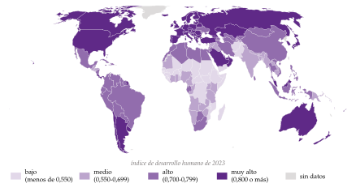
Fuente: elaboración propia a partir de Programa de las Naciones Unidas para el Desarrollo (2025a) (Informe sobre Desarrollo Humano 2025, IDH de 2023). Fronteras de Natural Earth (1:110 millones); mapa generado con graficos/mapas-desarrollo.py.
La renta: la base material y la clasificación de los países
El indicador: la renta nacional bruta (RNB) por habitante, que suma al PIB las rentas netas recibidas del exterior, es la dimensión material del IDH y el criterio con el que se clasifica a los países. Se prefiere la renta nacional a la producción interior porque un país con mucha inversión extranjera puede producir mucho y quedarse con poco: las filiales repatrían sus beneficios.
La clasificación del Banco Mundial: cada 1 de julio ordena los países por su RNB por habitante del año anterior en 4 grupos: renta baja, media-baja, media-alta y alta (gráfico 2). Desde julio de 2026, la renta baja llega hasta 1.175 dólares y la alta empieza en 14.375; los países de renta baja y media son los países en desarrollo de la introducción.
Por qué no basta: la renta es un medio y una media. No dice cómo se reparte ni en qué se convierte: con casi la misma renta por habitante, un país puede tener un desarrollo humano mucho mayor que otro (introducción). Por eso el IDH la combina con la salud y la educación, y la pobreza mira a quienes quedan abajo.
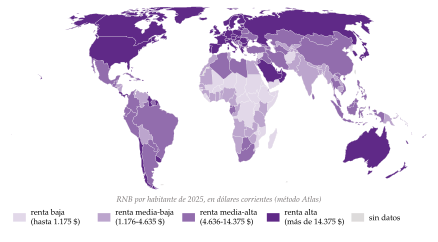
Fuente: elaboración propia a partir de Banco Mundial (2026a) (clasificación del ejercicio 2027, con la RNB por habitante de 2025). Fronteras de Natural Earth (1:110 millones); mapa generado con graficos/mapas-desarrollo.py.
La renta en detalle.
El método Atlas y la PPA: la clasificación usa tipos de cambio de mercado suavizados (método Atlas). A tipos de cambio de mercado se infravalora la renta de los países pobres, donde los servicios que no se comercian son más baratos; por eso, para comparar niveles de vida, se usa la paridad de poder adquisitivo (PPA): la renta por habitante de los países de renta alta es 65 veces la de los de renta baja a tipos de cambio de mercado y 26 veces en PPA.
Los umbrales de julio de 2026: renta baja, hasta 1.175 dólares (25 economías); media-baja, de 1.176 a 4.635 (47); media-alta, de 4.636 a 14.375 (59); alta, más de 14.375 (86).
La pobreza: la cara más dura del subdesarrollo
Absoluta y relativa: la pobreza absoluta es no alcanzar un mínimo fijo de consumo; la relativa, quedar lejos de la mediana del propio país (en la Unión Europea, por debajo del 60 % de la renta mediana). En los países en desarrollo importa sobre todo la absoluta.
La línea internacional: desde junio de 2025, el Banco Mundial considera en pobreza extrema a quien vive con menos de 3,00 dólares diarios de PPA de 2021 (antes, 2,15 dólares de PPA de 2017). Con las líneas típicas de los países de renta media-baja y media-alta, 4,20 y 8,30 dólares, es pobre el 18 % y el 46 % de la población mundial.
La pobreza multidimensional: igual que el IDH completa la renta, el índice de pobreza multidimensional, del PNUD y la Universidad de Oxford, completa la línea de pobreza: cuenta las carencias de cada hogar en salud, educación y condiciones de vida (agua, electricidad, vivienda). Unos 1.100 millones de personas sufren pobreza multidimensional aguda, la mitad de ellas menores.
Nexo: medido el desarrollo, vemos qué tienen en común los países que no lo han alcanzado. Su evolución en el tiempo, la de la pobreza incluida, es el punto de partida del apartado II.
I.2. Características de los países en desarrollo
Nexo: los países en desarrollo son muy heterogéneos (Vietnam y Níger no se parecen en casi nada) y no todos tienen todos los rasgos, pero la mayoría comparte 3 grupos de ellos: económicos, institucionales y demográficos. La tabla 1 los resume con datos.
| Renta baja | Renta media-baja | Renta alta | |
|---|---|---|---|
| RNB por habitante, PPA (dólares internacionales corrientes, 2025) | 2.653 | 10.785 | 69.862 |
| Empleo en la agricultura (% del total, 2025) | 59,4 | 39,8 | 2,9 |
| Hijos por mujer (2024) | 4,5 | 2,6 | 1,4 |
| Población menor de 15 años (%, 2025) | 40,9 | 29,5 | 15,5 |
| Crecimiento de la población (% anual, 2025) | 2,7 | 1,3 | 0,4 |
| Esperanza de vida al nacer (años, 2024) | 65,2 | 69,5 | 80,4 |
| Población urbana (%, 2025) | 35,2 | 42,0 | 80,2 |
| Crédito al sector privado (% del PIB) | 12,6a | 38,7 | 152,1b |
| Ahorro bruto (% de la RNB) | 15,8b | 28,2 | 23,2b |
Fuente: Banco Mundial (2026c). Grupos de renta del Banco Mundial. Crédito y ahorro, 2025, salvo (a) 2020 y (b) 2024.
Rasgos económicos
Renta baja y dualidad: un sector tradicional, sobre todo agrario, con mucho empleo y baja productividad, junto a un sector moderno pequeño. En los países de renta baja, 6 de cada 10 ocupados trabajan en la agricultura; en los de renta alta, 3 de cada 100.
Poco paro abierto y mucho subempleo: sin seguro de desempleo, casi nadie puede permitirse estar parado; el problema es el empleo de baja productividad y la informalidad. El 58 % del empleo mundial es informal, y bastante más en los países de renta baja.
Poco ahorro y mercados financieros poco profundos: el crédito al sector privado es el 13 % del PIB en los países de renta baja y el 152 % en los de renta alta, y los seguros apenas existen.
Dependencia de los productos primarios: las exportaciones se concentran en materias primas y alimentos, con precios volátiles y una demanda que crece menos que la renta mundial (ley de Engel3), y las importaciones, en bienes de capital y manufacturas.
Un auge de las materias primas puede incluso perjudicar: la enfermedad holandesa. Los ingresos del recurso aprecian el tipo de cambio real y atraen capital y trabajo al sector del recurso y a los servicios, y la industria y la agricultura que exportan pierden competitividad. Cuando el precio cae, el país se queda sin el recurso y sin la industria.
Vulnerabilidad: a la deuda externa y a los choques del clima, que golpean más a los países pobres y cálidos [ver tema 3.B.29] [ver tema 3.B.31].
Desigualdad: suele ser más alta que en los países ricos, sobre todo en América Latina y en el África austral; si es una fase del desarrollo o no, es una de las tendencias que se ven en el apartado II.1.
Rasgos institucionales
Un Estado con poca capacidad, por exceso o por defecto: recauda poco (en torno al 10 % del PIB en impuestos en los países de renta baja, según el último dato agregado, de 2016, frente al 15 % de la administración central en los de renta alta), depende de los aranceles y, a veces, del señoreaje, que alimenta la inflación.
Reglas del juego débiles: derechos de propiedad poco seguros, corrupción, mucha economía sumergida y, con frecuencia, regímenes poco democráticos e inestabilidad política, en parte alimentada por la desigualdad. Es el objeto del enfoque institucional (apartado II.3.2).
Rasgos demográficos
Una transición demográfica a medias: la mortalidad ya ha caído mucho (la esperanza de vida es de 65 años en los países de renta baja), pero la natalidad sigue alta (4,5 hijos por mujer), de modo que la población crece deprisa (2,7 % al año) y es muy joven (el 41 % tiene menos de 15 años).
La consecuencia: hace falta mucha inversión solo para mantener el capital por persona; en el modelo de Solow, una \(n\) alta baja la renta de estado estacionario [ver tema 3.A.43]. No es así en todos: en buena parte de Asia y de América Latina la fecundidad ya está cerca de la de los países ricos.
Recapitulación y nexo: los rasgos de los países en desarrollo se refuerzan entre sí (poca productividad, poco ahorro, poco Estado, mucha población): no son solo síntomas del atraso. La aproximación macroeconómica los convirtió en causas del atraso de los países; la microeconómica, en restricciones de los hogares.
II. Aproximación macroeconómica
En el cante (10′): las tendencias (1′30″), de palabra, con 3 cifras de la pobreza (43 %, 10 %, 7 de cada 10 en África), la convergencia desde 2000 y la U invertida de Kuznets, que los datos no confirman; las teorías pioneras (5′30″): la emergencia y las ideas comunes (0′45″); Lewis (1′15″) con el gráfico, que se construye en 3 pasos (gráficos 6 a 8); Rostow y la brecha de financiación (0′30″); Myrdal y Kaldor de palabra (0′30″); Nurkse, la trampa y el gran empujón (1′15″), con el gráfico 9, que se explica en 3 pasos; la CEPAL y la sustitución de importaciones en resumen (0′30″); el replanteamiento ortodoxo y el Consenso de Washington (0′45″), en orden cronológico. Las teorías recientes (3′): el crecimiento endógeno, los fallos de coordinación, el anillo O y la distancia a la frontera (1′30″), y las instituciones (1′30″). Lo que va en cajas grises y en el anexo B es de profundización.
Conclusión anticipada: a escala de los países, el atraso no se corrige solo. Los primeros teóricos del desarrollo acertaron en las preguntas (cambio estructural, equilibrios múltiples, fallos de coordinación), aunque apenas las formalizaron, y sus recetas, primero intervencionistas y después liberales, fallaron cuando se aplicaron como recetas universales. Las teorías recientes formalizan aquellas intuiciones y apuntan a las instituciones como causa última.
Nexo: primero, los hechos agregados que hay que explicar; después, las teorías.
II.1. Tendencias globales en crecimiento, desigualdad y pobreza
Crecimiento: una convergencia reciente y parcial
La convergencia: no la hubo en el siglo XX, en el que los países ricos se alejaron de los pobres; desde 2000 los pobres crecen algo más deprisa, aunque con fragilidad [ver tema 3.A.45]. El PIB real por habitante de las economías emergentes y en desarrollo se ha multiplicado por 2,6 desde 1995, frente a 1,5 en las avanzadas, pero sobre todo por Asia.
La renta media: muchos países que salieron de la pobreza se estancan al llegar a la renta media; es la trampa de la renta media (apartado II.3.1).
El desarrollo humano: todas las regiones han mejorado su IDH desde 1990, y el África subsahariana sigue la última (gráfico 3).
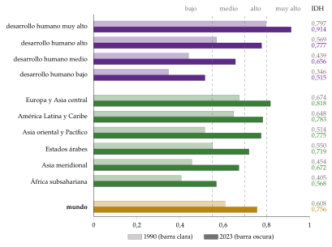
Fuente: elaboración propia a partir de Programa de las Naciones Unidas para el Desarrollo (2025a) (Informe sobre Desarrollo Humano 2025). El índice y la lista de países, en «Índice de desarrollo humano» y «Anexo:Países por índice de desarrollo humano» (Wikipedia).
China, con un IDH de 0,797 (puesto 78), está ya en el grupo de desarrollo humano alto, casi en el muy alto.
Pobreza: una caída histórica, cada vez más concentrada en África
La evolución (gráfico 4): la pobreza extrema ha caído del 43,4 % de la población mundial en 1990 al 10,1 % en 2024, aunque desde 2014 lo hace muy despacio.
Asia: la caída se concentra en Asia oriental (del 67 % al 2 %) y meridional (del 50 % al 3 %). China explica casi 2 tercios de la reducción mundial: sus pobres extremos pasaron de unos 940 millones en 1990, el 83 % de su población, a prácticamente ninguno desde 2019.
África: en el África subsahariana, la tasa solo ha bajado del 62 % al 45 %, y como su población crece deprisa, el número de pobres ha aumentado de 321 a 581 millones: hoy son el 70 % de los pobres extremos del mundo.
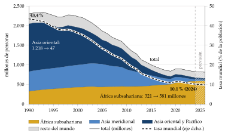
Fuente: elaboración propia a partir de Banco Mundial (2026b) (Poverty and Inequality Platform, actualización del 22 de septiembre de 2026). 2025 y 2026, estimaciones adelantadas del Banco Mundial.
Desigualdad: ¿una fase del desarrollo?
La curva de Kuznets: Kuznets (1955)4 propuso que, al desarrollarse un país, la desigualdad primero sube y luego baja, una U invertida entre la renta por habitante y el índice de Gini (IG) [ver tema 3.A.24]. Al principio, la población pasa de un sector agrario pobre e igualitario a uno urbano más rico y más desigual; cuando la mayoría ya está en el moderno, la educación y la redistribución la reducen. Es la misma dualidad de Lewis (apartado II.2.2).
La evidencia no la confirma como ley. En el corte transversal actual de 150 países apenas se ve: un ajuste cuadrático explica el 10 % de las diferencias de desigualdad entre países, y la U que dibuja la empujan América Latina y el África austral, con Gini altos para su renta (gráfico 5). Dentro de cada país, la U aparece rara vez. Y en las economías avanzadas la desigualdad ha vuelto a subir desde los 80: Piketty (2014) explica su caída de 1914-1945 por las guerras, la inflación y los impuestos progresivos, no por una ley del desarrollo [ver tema 3.A.45].
La curva del elefante: entre 1988 y 2008 las rentas que más crecieron en el mundo fueron las del centro de la distribución mundial (las clases medias de China y de otros emergentes) y las del 1 % más rico; las que menos, las de las clases medias y bajas de los países ricos. Como los emergentes crecieron más, la desigualdad entre países ha caído desde los 90, aunque haya subido dentro de muchos.
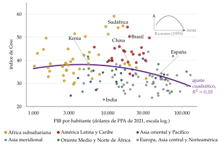
Fuente: elaboración propia a partir de Banco Mundial (2026c). PIB por habitante en dólares de PPA de 2021, en escala logarítmica; ajuste cuadrático en el logaritmo de la renta (\(R^2=0{,}10\)).
Nexo: unos países convergen y otros no, y la pobreza se concentra donde no ha habido crecimiento. ¿Por qué algunos países se quedan atrás? Es la pregunta de las teorías del desarrollo.
II.2. Las teorías pioneras y su replanteamiento
Conclusión anticipada: los primeros teóricos del desarrollo, de los 50 a los 70, vieron el atraso como una etapa (Lewis, Rostow) o como una situación estable, por causas internas (Myrdal, Kaldor, Nurkse) o externas (la CEPAL); la escuela ortodoxa y el Consenso de Washington los replantearon desde el mercado.
II.2.1. Emergencia e ideas comunes de la teoría del desarrollo
La insatisfacción con la teoría del crecimiento
Lo que decía la teoría del crecimiento: las primeras teorías del desarrollo nacen a la vez que el modelo de Solow (1956) [ver tema 3.A.43], que llega a 2 resultados:
los rendimientos decrecientes del capital llevan a un estado estacionario en el que solo el progreso técnico, exógeno, permite crecer de forma sostenida;
los países con poco capital, en los que el capital rinde más, crecen más deprisa: hay convergencia condicional, la renta por habitante de cada país converge a su propio estado estacionario, y los pobres alcanzan a los ricos si tienen el mismo ahorro, la misma población y la misma tecnología [ver tema 3.A.45].
Las 2 razones de la insatisfacción:
el modelo explicaba poco: el progreso técnico, un residuo, daba cuenta del 87,5 % del aumento de la producción por hora trabajada en Estados Unidos entre 1909 y 1949, la «medida de nuestra ignorancia»;
el mundo como nivelador: la teoría neoclásica veía la economía mundial como un sistema que tiende a igualar las rentas, y los países pobres no parecían acercarse a los ricos.
Las ideas comunes
Quiénes: Lewis, Rosenstein-Rodan, Nurkse, Myrdal, Kaldor, Hirschman, Prebisch y Singer. Se les suele llamar heterodoxos, aunque su inspiración es más bien keynesiana: la economía puede estar en un equilibrio malo, la demanda importa y hace falta un impulso para salir de él.
Sus 2 ideas:
La convergencia no está garantizada: las variables de las que depende el crecimiento en el modelo neoclásico (ahorro, capital humano, tamaño del mercado) dependen a su vez del desarrollo, y pueden formar círculos viciosos y equilibrios múltiples5.
El cambio estructural es causa, y no solo consecuencia, del desarrollo: los modelos neoclásicos tienen un solo sector, pero los países pobres son duales, con un sector moderno y otro tradicional. Si el crecimiento agregado es la media de los de cada sector ponderada por su peso, trasladar trabajo de la agricultura poco productiva a la industria hace crecer la economía, y la industria es el motor del crecimiento.
La excepción: no todos pensaban así. T. W. Schultz (1964) sostenía que los campesinos tradicionales son pobres pero eficientes: asignan bien lo poco que tienen, y lo que les falta para crecer son factores nuevos (semillas mejoradas, fertilizantes, educación) que hagan rentable invertir. Es un germen de la contrarrevolución neoclásica (apartado II.2.5).
Nexo: estas 2 ideas ordenan el resto del bloque. La dualidad lleva a Lewis y a Rostow (el subdesarrollo como etapa); la no convergencia, a Myrdal, Kaldor, Nurkse y la CEPAL (el subdesarrollo como situación).
II.2.2. El subdesarrollo entendido como una etapa
Modelo dual de Lewis (1954)
a) Idea
¿Cómo crece una economía con un sector tradicional que tiene trabajo de sobra? Lewis (1954) responde que trasladando ese trabajo, sin coste para el campo, a un sector moderno que reinvierte sus beneficios.
Para Lewis, el problema central del desarrollo es entender cómo una economía que ahorra el 4 o el 5 % de su renta pasa a ahorrar el 12 o el 15 %: el ahorro sube porque sube la parte de la renta que va a quienes ahorran, los capitalistas.
b) Modelo
i) Supuestos:
2 sectores: el tradicional (agrario, de subsistencia), donde la productividad marginal del trabajo es casi nula y se cobra un salario institucional, \(\overline w_A\), el producto medio que reparte la familia; y el moderno (industrial, capitalista), que maximiza beneficios;
el sector moderno contrata a un salario \(w_M=\overline w_A(1+\text{prima})\), con una prima que compensa el coste de la vida en la ciudad y del traslado; a ese salario la oferta de trabajo es perfectamente elástica, la «oferta ilimitada de trabajo» del título del artículo;
los capitalistas reinvierten sus beneficios; los trabajadores no ahorran.
ii) Desarrollo, paso a paso:
la oferta de trabajo (gráfico 6): el sector moderno puede contratar a cuantos quiera al salario \(w_M\), por encima del salario institucional \(\overline w_A\): la oferta es horizontal mientras haya excedente de trabajo en el campo, y solo se vuelve creciente al agotarse, en el punto de Lewis;
el empleo y el beneficio (gráfico 7): con el capital \(K_1\), el empleo del sector moderno, \(L_M\), se fija donde el valor del producto marginal del trabajo iguala al salario, \(p\,\mathrm{PMg}_L(K_1)=w_M\): la demanda de trabajo es \(D(K_1)\), el empleo es \(L_1\) y el área entre la demanda y el salario es el beneficio de los capitalistas;
la reinversión (gráfico 8): el beneficio se reinvierte; con \(K_2>K_1\) el producto marginal del trabajo sube, la demanda se desplaza a la derecha, \(D(K_2)\), y el sector moderno contrata \(L_2\) al mismo salario, sin que caiga la producción agraria; y así sucesivamente con \(K_3\), hasta \(L_3\);
el final del excedente: en el punto de Lewis, cada trabajador que se va reduce la producción del campo, los salarios suben en los 2 sectores y la economía pasa a funcionar como la neoclásica.
iii) Implicaciones:
el motor del desarrollo es la acumulación del beneficio del sector moderno, por el lado de la oferta: la parte de los beneficios en la renta y la tasa de ahorro suben a medida que la economía se industrializa;
la desigualdad crece al principio, lo que enlaza con la curva de Kuznets (apartado I.2);
la política debe favorecer la inversión del sector moderno y no subir los salarios antes de tiempo.
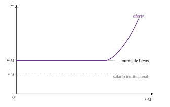
Fuente: elaboración propia a partir de Lewis (1954) y Ray (1998, cap. 10). Primer paso del gráfico 8.
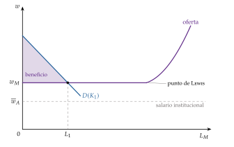
Fuente: elaboración propia a partir de Lewis (1954) y Ray (1998, cap. 10). Segundo paso del gráfico 8.
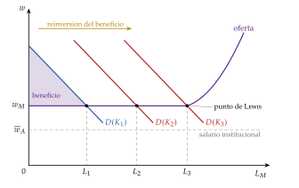
Fuente: elaboración propia a partir de Lewis (1954) y Ray (1998, cap. 10).
c) Extensiones
Ranis y Fei (1961): el trabajo del campo deja de sobrar antes de lo que parece. Cuando la productividad marginal agraria se hace positiva, cada trabajador que se va reduce la producción de alimentos, su precio relativo sube y con él el salario industrial, antes del punto de Lewis. Industrializarse exige que crezca a la vez la productividad agraria: un crecimiento equilibrado entre los 2 sectores.
Harris y Todaro (1970): el paro está en las ciudades, no en el campo.6 Si el salario urbano, \(\overline w_M\), está fijado por encima del de equilibrio (por ley o por los sindicatos), los campesinos emigran hasta que el salario urbano esperado iguala al del campo, \(w_A\): \[w_A=\frac{L_M}{L_U}\,\overline w_M ,\] donde \(L_U\) es la población activa urbana (los ocupados del sector moderno, \(L_M\), más los parados) y \(L_M/L_U\) la probabilidad de encontrar empleo en la ciudad7. En equilibrio hay paro urbano, y crear empleo en la ciudad puede aumentarlo, porque atrae a más emigrantes del campo.
d) Evidencia empírica
Las industrializaciones con salarios contenidos: el modelo describe bien las de Japón, Corea del Sur o China, con décadas de salarios industriales casi estancados mientras el campo se vaciaba. En China, el debate sobre si se alcanzó el punto de Lewis se abrió hacia 2010, cuando los salarios de los trabajadores emigrados empezaron a subir deprisa.
España: el éxodo rural de los 60 dio a la industria una oferta de trabajo muy elástica que contuvo los salarios [ver tema 4.A.27].
e) Valoración
A favor: es el primer modelo que hace del cambio estructural el motor del crecimiento, y sigue siendo la forma de pensar la industrialización.
En contra:
los capitalistas pueden no reinvertir todo el beneficio, o sacarlo del país;
la reinversión puede ahorrar trabajo (máquinas en lugar de empleo) y no desplazar la demanda de trabajo;
supone una movilidad perfecta del trabajo entre sectores;
el excedente de trabajo es menor de lo que suponía (Ranis y Fei), y el paro está en la ciudad (Harris y Todaro).
Modelo de etapas de Rostow (1960)
a) Idea
Si Lewis explica el mecanismo, Rostow (1960) ordena la historia: todos los países pasan por las mismas etapas, y el subdesarrollo es solo la primera.
b) Modelo
Las 5 etapas (figura 1):
la sociedad tradicional, agraria y con un techo tecnológico;
las condiciones previas para el despegue: inversión en transporte y en agricultura, un Estado nacional y una élite empresarial;
el despegue, la etapa clave: la inversión pasa de menos del 5 % a más del 10 % de la renta y unos sectores líderes arrastran al resto;
el camino hacia la madurez: la tecnología moderna se extiende a toda la economía;
la era del alto consumo de masas, con la terciarización.
La implicación: la brecha de financiación. Para despegar hay que reunir el ahorro que pide la inversión, con ayuda exterior si hace falta. Los organismos internacionales lo calcularon con la versión de Domar del modelo de Harrod y Domar [ver tema 3.A.43]: si para crecer a una tasa objetivo \(\bar\gamma_Y\) hace falta invertir \[\frac{I}{Y}=v\,\bar\gamma_Y ,\] con \(v\) la relación capital-producto, la diferencia con la tasa de ahorro interna, \(v\,\bar\gamma_Y-s\), era la ayuda «necesaria» [ver tema 3.B.29].
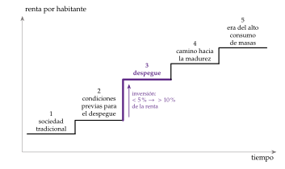
Fuente: elaboración propia a partir de Rostow (1960).
c) Valoración
Una descripción, más que una teoría, inspirada en la historia británica. Gerschenkron (1962) mostró que los países atrasados no repiten las etapas: se las saltan, con más Estado o con más bancos para suplir lo que les falta.
La brecha de financiación no funcionó: la ayuda no se tradujo en inversión ni la inversión en crecimiento, y el propio Domar había renegado de ese uso de su modelo.
Nada garantiza el despegue: la idea de que el subdesarrollo es una etapa que acabará pasando llevó a otros autores a preguntarse lo contrario, por qué el atraso puede ser una situación estable.
II.2.3. El subdesarrollo entendido como una situación: factores internos
Nexo: frente a la etapa, la situación. Estos autores buscan las fuerzas que perpetúan el atraso dentro de cada economía: la causación acumulativa, el crecimiento que se realimenta y las trampas de pobreza.
Efectos acumulativos: Myrdal (1957)
a) Idea
El mercado no nivela, amplifica. Para Gunnar Myrdal, la economía no tiende a un estado estacionario estable, como en el modelo de Solow, sino a círculos virtuosos y viciosos de causación circular acumulativa8.
b) Modelo
El mecanismo: la inversión va donde ya hay actividad, por las economías de aglomeración. La región rica atrae el capital y el trabajo cualificado de la pobre (efectos de retroceso), y solo una parte de su prosperidad llega a la pobre (efectos de difusión). Si dominan los primeros, las regiones ricas se hacen más ricas y las pobres, más pobres.
Dentro y fuera: el mismo argumento vale entre las regiones de un país y entre países; por eso Myrdal está entre los factores internos, donde actúa el mecanismo, y hace de puente con los externos (apartado II.2.4).
La implicación: el Estado debe estimular las regiones a las que no va el mercado, para poner la causación en la senda virtuosa: es la lógica de la política regional, que formalizará la nueva geografía económica [ver tema 3.B.6].
c) Valoración
Es una intuición poderosa, pero sin un modelo formal no dice cuándo domina el retroceso y cuándo la difusión. Esa pregunta es la que se hace Kaldor.
Crecimiento acumulativo y equilibrios múltiples: Kaldor (1966 y 1970)
a) Idea
Kaldor (1966, 1970) da forma a la causación acumulativa con la ley de Kaldor-Verdoorn: la productividad de la industria crece más cuanto más crece su producción (economías de escala dinámicas, aprendizaje por la práctica), y la producción crece más cuanto más productiva y competitiva es la economía.
b) Modelo
2 ecuaciones, que formalizan Dixon y Thirlwall (1975): el crecimiento de la productividad depende del de la producción, y el de la producción, a través de las exportaciones, del de la productividad.
El resultado: todo depende de la fuerza de esa realimentación. Si es débil, la economía converge a una tasa de crecimiento que fijan las condiciones iniciales y la demanda externa; si es fuerte, se aleja de ella en una espiral virtuosa o viciosa, y pequeñas ventajas iniciales se perpetúan (anexo B).
La implicación: un impulso inicial (política industrial, promoción de las exportaciones) puede poner a un país en la buena senda.
c) Valoración
Kaldor contrastó la ley de Verdoorn con los datos de la industria de los países de la OCDE, pero el modelo es de demanda y deja fuera la acumulación de factores. Su gran idea, que el estado estacionario único y estable puede no existir, es la de los equilibrios múltiples y las trampas de pobreza.
Trampas de pobreza: Nurkse (1953)
a) Idea
Un país es pobre porque es pobre: para Nurkse (1953), la pobreza se perpetúa por 2 círculos viciosos:
por la oferta de capital: renta baja \(\to\) poco ahorro \(\to\) poco capital \(\to\) baja productividad \(\to\) renta baja;
por la demanda: renta baja \(\to\) mercado pequeño \(\to\) pocos incentivos a invertir \(\to\) poco capital \(\to\) renta baja.
El atraso es entonces un equilibrio estable de renta baja, una trampa de pobreza: pequeños aumentos de la renta se pierden y la economía vuelve a él.
b) Modelo
i) Supuestos: los del modelo de Solow, pero con una función de producción con forma de S: rendimientos decrecientes con poco capital (una economía agraria), crecientes en un tramo intermedio (infraestructuras, externalidades o una tecnología moderna que solo compensa a partir de un umbral) y otra vez decrecientes con mucho. Detrás puede haber un ahorro que depende de la renta, mercados financieros que no prestan a los pobres, impaciencia por la inseguridad o una población que crece más cuando la renta es baja9.
ii) Desarrollo, paso a paso, en la representación en tasas del modelo de Solow [ver tema 3.A.43] (gráfico 9):
las 2 curvas: con la función en S, la curva de ahorro, \(s\,f(\tilde k)/\tilde k\), ya no es monótona: decrece, crece y vuelve a decrecer; la de depreciación efectiva, \(n+g+\delta\), sigue siendo horizontal;
los 3 estados estacionarios: las 2 curvas se cortan 3 veces. Donde la curva de ahorro está por encima de la horizontal, \(\tilde k\) crece; donde está por debajo, decrece. Por eso hay 2 estados estacionarios estables, uno pobre (\(\tilde k_B\), la trampa) y otro rico (\(\tilde k_A\)), separados por uno inestable (\(\tilde k_U\)), el umbral;
la salida: una economía en \(\tilde k_B\) vuelve a \(\tilde k_B\) tras un aumento pequeño del capital; solo uno que la lleve más allá de \(\tilde k_U\) la pone en camino de \(\tilde k_A\).
iii) Implicaciones: la renta a largo plazo depende de dónde se parte. Una ayuda pequeña no saca de la trampa; un gran empujón (big push) que lleve el capital más allá de \(\tilde k_U\), sí, y después puede retirarse.
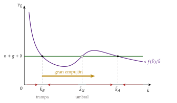
Fuente: elaboración propia a partir de Sala-i-Martín (2000, cap. 1) y Barro y Sala-i-Martin (2004, cap. 1).
c) Extensiones: el gran empujón
La idea de Rosenstein-Rodan (1943): una fábrica de zapatos que emplea a miles de campesinos no es rentable sola, porque sus trabajadores no gastarán todo su salario en zapatos; sí lo es si a la vez se abren muchas fábricas de bienes distintos, porque los salarios de cada una compran lo que producen las demás. Es un fallo de coordinación: invertir en cada sector solo es rentable si invierten los demás.
Una fábrica sola no saca a un país de la pobreza, igual que «una golondrina no hace verano»: hace falta un programa de inversión simultáneo en muchos sectores, que coordina el Estado (el crecimiento equilibrado que pedía también Nurkse).
La formalización de Murphy, Shleifer y Vishny (1989): con 2 técnicas en cada sector, la tradicional y una moderna con un coste fijo y una prima salarial, una empresa moderna sola vende poco y no cubre el coste fijo; si se modernizan todas, los salarios y beneficios que pagan aumentan la demanda de todos los bienes y cada una vende lo bastante. Hay 2 equilibrios, todos tradicionales y todos modernos; el segundo es mejor para todos, pero el mercado puede quedarse en el primero (el álgebra y su gráfico, en el anexo B).
La alternativa de Hirschman (1958): un país pobre no puede financiar un programa en todos los sectores a la vez. Mejor un crecimiento desequilibrado: concentrar la inversión en los sectores con más eslabonamientos, hacia atrás (los que compran mucho a otros, como el automóvil) y hacia delante (los que venden a muchos, como el acero), para que sus cuellos de botella tiren de los demás. Se miden con las tablas input-output [ver tema 3.A.31].
d) Evidencia empírica
A escala de países, pocas: casi todos los países pobres han crecido a largo plazo, y la renta de los más pobres no se queda quieta, como haría en una trampa. Los mecanismos que la generarían (nutrición, ahorro, demografía) tampoco se observan con la fuerza necesaria.
A escala de hogares, más plausibles: con activos o capacidades por debajo de un umbral, un hogar puede quedarse atrapado aunque el país crezca (apartado III.2.1).
e) Valoración
La trampa no la predijo Solow: es de la literatura posterior, que cambió la forma de la función de producción. Su lección es que la política puede importar mucho en el punto de partida.
Pero justificó grandes programas de inversión pública y de ayuda que a menudo fracasaron: si la trampa es rara entre países, el empujón no basta, y hay que buscar qué falla en cada caso. La pregunta vuelve, formalizada, en las teorías recientes (apartado II.3.1).
II.2.4. El subdesarrollo entendido como una situación: factores externos
Nexo: las teorías anteriores buscan las causas del atraso dentro de cada país; las siguientes, en sus relaciones con los países ricos.
La escuela estructuralista de la CEPAL: Prebisch y Singer
a) Idea
La correa de transmisión rota: en el siglo XIX, el comercio transmitió el crecimiento del centro a la periferia (demanda de materias primas, capital y emigrantes); en el XX dejó de hacerlo. Para la Comisión Económica para América Latina (CEPAL), la economía mundial se divide en un centro industrial y una periferia que exporta productos primarios, y el intercambio entre ambos perjudica a la periferia.10
b) Modelo
La tesis de Prebisch y Singer: la relación real de intercambio de la periferia, \(\mathrm{RRI}=p_X/p_M\), tiende a empeorar a largo plazo:
porque la demanda de productos primarios crece menos que la renta (ley de Engel) y el centro protege su agricultura;
porque en el centro los sindicatos y el poder de mercado retienen las ganancias de productividad en forma de salarios y márgenes, mientras que en la periferia la competencia las traslada a los precios.
Cada unidad importada le cuesta a la periferia cada vez más exportaciones: el fruto de su productividad se lo queda, a través de los precios, el centro.
La implicación: la industrialización por sustitución de importaciones (ISI), proteger la industria nacional hasta que aprenda a producir con costes competitivos, con el argumento de la industria naciente [ver tema 3.B.8]11. Se aplicó en América Latina, la India, buena parte de África o España, de los 50 a los 70.
Una versión moderna: la restricción externa al crecimiento, la ley de Thirlwall12, y, en una corriente más radical, la teoría de la dependencia, que atribuye el subdesarrollo a la propia integración en el capitalismo mundial.
c) Valoración
La tendencia: la caída de la relación real de intercambio de los productos primarios se observa, pero es débil y con rupturas.
La ISI: creó industria, pero cara e ineficiente, con búsqueda de rentas en el reparto de las licencias, crisis de balanza de pagos y pocas exportaciones; la India era en 1980 más pobre en relación con Estados Unidos que en 1950 (el 5 % de su renta por habitante, frente al 6,5 %). A favor, la historia: los países ricos se industrializaron con la protección que después negaron a los pobres.
Hoy vuelve, como política industrial de autonomía estratégica, de Made in China 2025 a los planes de la India. La evidencia y la comparación con la alternativa asiática se estudian aparte [ver tema 3.B.9].
La alternativa: la industrialización orientada a la exportación
La idea: la que siguieron desde los 60 los 4 tigres asiáticos (Hong Kong, Singapur, Taiwán y Corea del Sur): industrializarse vendiendo al mundo, empezando por las manufacturas intensivas en trabajo en las que tenían ventaja comparativa y subiendo de gama a medida que acumulaban capital humano.
Los instrumentos: no solo subvenciones a la exportación, sino un tipo de cambio realista, acceso libre a los insumos importados para exportar y apoyos (crédito, subvenciones) condicionados a vender en los mercados exteriores, que disciplinaban a las empresas.
La valoración: crecimientos del 6 o el 7 % anual durante décadas. Pero no fue solo el comercio: también contaron el ahorro alto, la educación, la estabilidad macroeconómica, la reforma agraria previa en Corea del Sur y Taiwán y la inversión extranjera (anexo B) [ver tema 3.B.9].
II.2.5. Replanteamiento: la escuela ortodoxa y el Consenso de Washington
Nexo: mientras unos protegían y otros exportaban, la escuela ortodoxa recuperó el pensamiento neoclásico para aplicarlo al subdesarrollo. Su historia va de los 60 a los 90, en 4 pasos.
De la reconsideración conservadora a la contrarrevolución neoclásica
Los 60 y 70: la reconsideración conservadora. Bauer y Harry Johnson critican los 3 pilares de las teorías anteriores: la protección (el libre comercio da ganancias), la industrialización a toda costa (la agricultura también puede ser motor) y el intervencionismo (los gobiernos también fallan: búsqueda de rentas, grupos de presión). Para Bauer (1972), la ayuda al desarrollo refuerza al Estado frente al mercado y puede perjudicar.
Los 70: el giro hacia las necesidades básicas. Países como Brasil crecían sin reducir la pobreza. La Conferencia Mundial del Empleo de la Organización Internacional del Trabajo (Ginebra, 1976) propuso orientar el desarrollo a las necesidades básicas:
lo imprescindible para cada familia: comer, vestirse y tener un techo;
servicios esenciales: agua potable, saneamiento, salud, educación y transporte;
un empleo adecuadamente remunerado;
la participación en las decisiones que afectan a cada uno.
Los 80: la contrarrevolución neoclásica. 3 hechos la impulsan:
la crisis de la deuda de 1982, tras una década de préstamos dedicados en buena parte al consumo;
el agotamiento de la ISI, cuyos países no convergían;
el éxito de los tigres asiáticos, leído como el triunfo del mercado y de la apertura.
Krueger, Bhagwati o Balassa defienden que el desarrollo lo traen la apertura y los precios correctos, y los programas de ajuste del Fondo Monetario Internacional (FMI) y del Banco Mundial lo aplican en los países endeudados.
El Consenso de Washington
a) Idea
Williamson (1990) resumió en una conferencia de noviembre de 1989, en 10 puntos, lo que los organismos con sede en Washington (el FMI, el Banco Mundial, el Tesoro de Estados Unidos) pedían a América Latina: es el Consenso de Washington.
b) Modelo
Sus 4 bloques (los 10 puntos, en el anexo B):
estabilidad macroeconómica: disciplina fiscal, gasto público reorientado a la sanidad, la educación y las infraestructuras, y una reforma tributaria con bases amplias y tipos moderados;
precios de mercado: tipos de interés libres y un tipo de cambio competitivo;
apertura: liberalización comercial y de la inversión directa extranjera;
mercado y Estado: privatización, desregulación y derechos de propiedad seguros.
c) Valoración
La crisis del Consenso: en los 90, América Latina creció poco, las crisis financieras (México, 1994; Asia, 1997; Rusia, 1998; Argentina, 2001) mostraron el riesgo de liberalizar las entradas de capital sin regulación, y la transición de Rusia fracasó. Las críticas:
«café para todos»: la misma receta para países distintos, sin tener en cuenta sus instituciones ni el orden de las reformas (primero la cuenta corriente y la inversión directa, después la de cartera);
una lectura parcial de Asia: el informe del Banco Mundial sobre el «milagro» de Asia oriental y Stiglitz (1996)13 reconocen que Corea del Sur, Taiwán o Singapur no habían liberalizado sin más; habían intervenido (crédito dirigido, promoción selectiva de exportaciones), aunque para disciplinar al mercado y no para sustituirlo;
el segundo óptimo: en un mundo con fallos de mercado y de gobierno que no se pueden eliminar a la vez, copiar las «mejores prácticas» de los ricos puede empeorar las cosas [ver tema 3.A.22] (apartado II.3.2);
la equidad: el ajuste olvidó los costes sociales a corto plazo.
Las correcciones: el Banco Mundial ya había propuesto en 1991 un enfoque favorable al mercado (market-friendly), en el que el Estado invierte en las personas y en infraestructuras y deja el resto al mercado; en 1998 reconoció que hacían falta reformas institucionales, y su presidente propuso un Consenso de Santiago, con las reformas de segunda generación: educación, instituciones, sector financiero y pobreza.
Lo que queda: pese a su desprestigio, la dimensión macroeconómica del Consenso (disciplina fiscal, inflación baja, tipo de cambio realista) se ha consolidado como condición necesaria del desarrollo, aunque no suficiente.
Recapitulación y nexo: los teóricos del desarrollo vieron que el atraso puede ser un equilibrio estable (círculos viciosos, fallos de coordinación, restricción externa), y sus recetas (el gran empujón, la ISI) y las de la contrarrevolución (el Consenso de Washington) fallaron por lo mismo: eran recetas generales para problemas particulares. Desde finales de los 80, la teoría formaliza esas intuiciones y se pregunta por las instituciones.
II.3. Teorías recientes: complementariedades e instituciones
Conclusión anticipada: las teorías recientes convierten las intuiciones de los pioneros (rendimientos crecientes, externalidades, equilibrios múltiples) en modelos que se pueden contrastar, y buscan la causa última del atraso en las instituciones.
II.3.1. La teoría formal: crecimiento endógeno, fallos de coordinación y complementariedades
El crecimiento endógeno
La idea: si el capital, en sentido amplio (físico y humano), no tiene rendimientos decrecientes, como en el modelo \(AK\), \(Y=AK\), la economía crece a una tasa que depende del ahorro, \[\gamma_{Y/L}=s\,A-(n+\delta),\] y esa tasa no cae aunque el país se enriquezca [ver tema 3.A.44].
Las 2 ideas que los teóricos del desarrollo habían adelantado:
la convergencia no está garantizada: si la rentabilidad no cae con la renta, los pobres no tienen por qué crecer más que los ricos;
la economía se aleja de la competencia perfecta: con externalidades o con innovación que exige poder de mercado, el equilibrio no es eficiente y hay espacio para la política.
Por qué el capital no va a los pobres: con rendimientos decrecientes, el capital debería rendir muchísimo más en la India que en Estados Unidos y fluir de los ricos a los pobres; no lo hace, y es la paradoja de Lucas14.
Los fallos de coordinación
Volvamos a la trampa de pobreza (gráfico 9): el gran empujón de Rosenstein-Rodan, que Murphy, Shleifer y Vishny (1989) formalizan con rendimientos crecientes, es un fallo de coordinación: una técnica moderna solo es rentable si se vende lo bastante, y eso solo ocurre si los demás sectores también se modernizan y pagan salarios que se gastan en sus productos. En un equilibrio nadie invierte porque nadie invierte; en el otro, todos (anexo B).
Lo que en Nurkse era una intuición es ahora un resultado: el mercado puede quedarse en el equilibrio malo aunque el bueno sea mejor para todos, y salir de él exige coordinar expectativas e inversiones.
Las complementariedades: la teoría del anillo O
La idea: el transbordador Challenger estalló en 1986 porque falló una junta, un anillo de goma barato. Kremer (1993) lo convierte en una teoría del desarrollo: muchos procesos productivos son una cadena de tareas, y basta que una salga mal para que se pierda casi todo el valor.
El modelo: un producto exige \(m\) tareas, y cada una sale bien con una probabilidad \(q_i\) que depende de la cualificación de quien la hace. Con \(\overline V\) el valor del producto si todo sale bien (\(m\), \(q_i\) y \(\overline V\) son letras locales), el valor esperado por trabajador es proporcional a \[\overline V\prod_{i=1}^{m}q_i .\] Como las cualificaciones se multiplican, pequeñas diferencias dan grandes diferencias: con 10 tareas, si cada una sale bien el 95 % de las veces se obtiene el 60 % del valor; si sale bien el 90 %, solo el 35 %.
Las implicaciones:
los trabajadores se emparejan por cualificación, porque los buenos rinden más con los buenos, y los salarios crecen más que proporcionalmente con ella: los cualificados de los países pobres ganan mucho más si emigran (la fuga de cerebros);
los países con poca cualificación se especializan en productos sencillos, con pocas tareas y poco valor añadido;
no formarse es racional si nadie más lo hace: otra trampa por complementariedades. Y unas infraestructuras malas (cortes de luz, transporte) son un anillo defectuoso para toda la economía.
La distancia a la frontera y la trampa de la renta media
La idea: lo que hace crecer a un país depende de lo lejos que esté de la frontera tecnológica.
Lejos de ella, crecer imitando es eficaz, y convienen instituciones que favorecen la inversión a gran escala: grandes grupos empresariales, crédito bancario, relaciones a largo plazo.
Cerca de ella hay que innovar, y convienen otras: competencia, entrada de empresas, mercados de capitales, universidades.
Un país que no cambia de instituciones a tiempo deja de converger [ver tema 3.A.44].
La trampa de la renta media: muchos países crecen deprisa hasta la renta media y allí se estancan, cuando se agotan la ventaja de los salarios bajos y la imitación y aún no saben innovar. Desde 1990 solo 34 economías de renta media han llegado a renta alta, más de un tercio gracias a la integración en la Unión Europea o al petróleo, y 108 siguen en la renta media, con unos 6.000 millones de personas.
La receta del Banco Mundial: invertir cuando se es pobre, incorporar tecnología de fuera al llegar a la renta media-baja e innovar en la media-alta, como hizo Corea del Sur.
Recapitulación y nexo: los modelos formales explican por qué puede no haber convergencia, pero no por qué unos países coordinan, acumulan e innovan y otros no. La respuesta más robusta mira a las reglas del juego.
II.3.2. Enfoque institucional: la importancia de las instituciones
Conclusión anticipada: las instituciones son la causa última más robusta del desarrollo, pero saber que importan no dice cuáles hay que tener ni cómo cambiarlas.
Qué son: las instituciones son las reglas del juego de una sociedad: la protección de la propiedad, el cumplimiento de los contratos, los límites al poder, la facilidad para crear una empresa. Importan porque fijan los incentivos a invertir, innovar y comerciar, y porque deciden quién se queda con los frutos.
El contexto: tras el Consenso de Washington, el propio Banco Mundial admitió que las instituciones importan, y Hall y Jones (1999)15 atribuyeron las diferencias de productividad entre países a su infraestructura social.
Inclusivas y extractivas: Acemoglu y Robinson (2012) distinguen las instituciones inclusivas, que protegen la propiedad de todos, abren los mercados y reparten el poder, de las extractivas, que concentran la renta y el poder en una élite.
La evidencia, en una frase: Acemoglu, Johnson y Robinson (2001) usan la mortalidad de los colonos europeos como instrumento, correlacionado con las instituciones y con el nivel de la renta actual, no con su crecimiento: el efecto estimado con variables instrumentales (0,94) es mayor que el de mínimos cuadrados (0,52) [ver tema 3.A.45].
Por qué persisten las malas: porque benefician a quien tiene el poder, que perdería con el cambio; es la visión del conflicto social, la que defienden Acemoglu, Johnson y Robinson (2005) [ver tema 3.A.45].
Un ejemplo: Botsuana, uno de los países más pobres del mundo al independizarse en 1966, conservó instituciones tradicionales que limitaban el poder de los jefes, protegió la propiedad y usó la renta de los diamantes sin caer en la enfermedad holandesa (apartado I.2): desde entonces ha sido de los países que más han crecido del mundo.
Qué son buenas instituciones: no hay consenso. La misma función (proteger la propiedad, dar crédito) se cumple con formas muy distintas: China creció en los 80 con empresas colectivas de los municipios y un sistema de doble vía de precios que no habría recomendado ningún manual. Rodrik (2008) aconseja instituciones de segundo óptimo, adaptadas a los fallos de mercado y de gobierno que cada país no puede eliminar a corto plazo, en lugar de copiar las «mejores prácticas» de los ricos [ver tema 3.A.22].
Lo que importa es la función de la institución, no su forma: «el hábito no hace al monje».
El diagnóstico del crecimiento: si no hay una receta para todos, ¿por dónde empezar? Hausmann, Rodrik y Velasco (2008) proponen buscar la restricción que más limita el crecimiento de cada país, la que tiene el precio sombra más alto, y concentrar ahí las reformas. Si la inversión privada es baja, es:
o porque su rendimiento social es bajo (geografía, capital humano, infraestructuras);
o porque el inversor no puede apropiárselo (impuestos, corrupción, inseguridad jurídica, inestabilidad macroeconómica, fallos de información y de coordinación);
o porque financiarse es caro (poco ahorro, mala intermediación).
En cada rama se busca la señal de la restricción que aprieta: si es la financiación, los tipos de interés reales serán altos y los proyectos rentables no encontrarán crédito.
El desarrollo como autodescubrimiento: descubrir qué puede producir bien un país es caro, y quien lo descubre no se queda con el beneficio, porque los demás lo imitan; se descubre demasiado poco. La política industrial debe premiar el descubrimiento y retirar el apoyo si no hay resultados.
Recapitulación y nexo: las instituciones explican mucho, pero cambian despacio. Mientras tanto, ¿qué se puede hacer, dadas las instituciones heredadas, para que a los pobres les vaya mejor? Es la pregunta de la aproximación microeconómica.
III. Aproximación microeconómica
En el cante (13′30″): las contribuciones pioneras de Sen y Deaton (2′); el comportamiento y los mercados de los pobres (3′): aspiraciones, escasez y trampas de los hogares (1′30″), y crédito y seguros (1′30″); la aproximación experimental (6′): el método (2′) con la descomposición del sesgo de selección (1), la evidencia (2′30″) con 4 o 5 ejemplos y la valoración (1′30″); las implicaciones para las políticas (2′30″), con las 6 lecciones. La tabla de experimentos (anexo D), la demostración del anexo C y las notas son de profundización.
Conclusión anticipada: a escala de las personas, la pobreza no solo es falta de renta: cambia cómo se decide y deja a los hogares fuera de mercados que funcionan mal. La aproximación experimental ha dado resultados sólidos y a veces sorprendentes sobre qué programas funcionan, aunque no sustituye a la teoría ni a la macroeconomía.
La idea: en lugar de buscar la causa agregada del atraso, estudiar cómo viven y deciden los pobres y cómo funcionan los mercados concretos (crédito, seguros, educación, salud). Si Acemoglu, Johnson y Robinson preguntan cómo la historia formó las instituciones, Duflo pregunta qué se puede hacer, dadas esas instituciones, para estimular el desarrollo.
III.1. Las contribuciones pioneras: Sen y Deaton
El precedente: T. W. Schultz (1964) ya había mirado al campesino y no al agregado: los campesinos tradicionales son pobres pero eficientes, y asignan bien lo poco que tienen (apartado II.2.1).
Amartya Sen: cambia la pregunta de cuánto se tiene a qué se puede hacer con ello.
Las capacidades: el bienestar no está en los bienes, sino en lo que permiten ser y hacer (estar sano, saber leer, participar); la pobreza es privación de capacidades. Es el fundamento del IDH y del índice de pobreza multidimensional (apartado I.1).
Las titularidades y las hambrunas: la hambruna de Bengala de 1943 se produjo sin que cayera la producción de alimentos. Lo que se hundió fue lo que los jornaleros podían obtener con su trabajo, sus titularidades (entitlements), porque los precios subieron y sus salarios no. El hambre es un problema de acceso, no solo de disponibilidad, y las democracias con prensa libre, que obligan a los gobiernos a reaccionar, no han tenido grandes hambrunas.
Angus Deaton: lleva la microeconometría al estudio de la pobreza.
Las encuestas de hogares: medir el consumo de cada hogar, y no solo la renta nacional, para saber quién es pobre, cómo reacciona a los precios y cómo le afecta una política (un impuesto sobre el arroz, una subvención). Las líneas de pobreza del Banco Mundial y sus cifras, que se calculan con esas encuestas, son en buena parte su herencia.
La nutrición: en la India, el consumo de calorías por habitante bajó durante décadas de crecimiento; no por más pobreza, sino porque el trabajo pesado y las enfermedades disminuyeron y se diversificó la dieta. Medir bien obliga a desconfiar de los indicadores sencillos.
El escéptico: el mismo Deaton será uno de los críticos más duros de los experimentos (apartado III.3.3).
Nexo: con Sen y Deaton, el foco pasa del país a las personas. La pregunta siguiente es cómo deciden los pobres y en qué mercados.
III.2. Comportamiento y mercados de los pobres
III.2.1. Enfoque cultural: el papel de las aspiraciones y del comportamiento
Conclusión anticipada: la pobreza no solo limita los recursos; también cambia cómo se decide, y eso puede perpetuarla.
Las aspiraciones: para Ray (2006), cada persona fija sus aspiraciones mirando a quienes tiene cerca. La brecha de aspiraciones es la distancia entre el nivel de vida al que se aspira y el actual:
si es pequeña, no hay incentivo a esforzarse;
si es enorme, tampoco, porque la meta parece inalcanzable;
solo una brecha intermedia mueve a invertir.
Genicot y Ray (2017) muestran que así la desigualdad se reproduce: en una sociedad muy desigual, los pobres miran a metas tan lejanas que no invierten.
La desesperanza: Duflo (2012) sostiene que la pobreza quita la confianza en poder cambiar las cosas, y que esa falta de esperanza frena la inversión en educación o en un negocio; parte del éxito de los programas de graduación (apartado III.3.2) se debería a que la devuelven.
La escasez: preocuparse por llegar a fin de mes ocupa la atención y empeora las decisiones. Los mismos cultivadores de caña de azúcar de la India resolvían peor las pruebas de razonamiento antes de la cosecha, cuando eran pobres, que después: no es que los pobres decidan peor, es que la pobreza agota.
Las trampas de los hogares: la trampa de pobreza puede darse en una familia aunque no se dé en un país. Si la renta de mañana depende de la de hoy con forma de S, hay un umbral por debajo del cual el hogar se empobrece y por encima del cual prospera: por la nutrición (quien come poco rinde poco y gana poco; (Dasgupta y Ray, 1986)), por los activos (sin una vaca o un taller solo hay trabajos mal pagados) o por el crédito.
A favor: en el programa de graduación de BRAC en Bangladés, que entregó activos (sobre todo vacas) a hogares muy pobres elegidos al azar, los que recibieron lo bastante para superar un umbral acumularon, cambiaron de ocupación y salieron de la pobreza durante 11 años; los que quedaron por debajo volvieron atrás.
En contra, a escala de países: casi todos los pobres crecen a largo plazo y los mecanismos son más continuos de lo que supone la teoría. Las trampas existen para algunos hogares y lugares, pero no son la norma.
La implicación: las políticas tienen que contar con el comportamiento (simplificar, recordar, dar incentivos pequeños e inmediatos) [ver tema 3.A.1], y donde hay umbral, una ayuda grande y temporal vale más que una pequeña y permanente.
Nexo: las aspiraciones y la escasez explican decisiones individuales; las toman, además, en mercados que fallan.
III.2.2. Mercados que fallan: el crédito y los seguros
El crédito: los pobres no tienen colateral, prestar en pequeño es caro y el prestamista no sabe quién es fiable ni puede vigilar lo que se hace con el dinero. El resultado es el racionamiento del crédito [ver tema 3.A.13] y unos prestamistas informales con tipos de interés muy altos.
Los microcréditos con responsabilidad conjunta: el Banco Grameen de Bangladés, fundado por Muhammad Yunus (Premio Nobel de la Paz de 2006), presta a grupos de vecinas que responden unas por otras. Aprovecha lo que el banco no sabe y los vecinos sí:
la selección: los prestatarios seguros se agrupan entre sí y los arriesgados quedan juntos, lo que alivia la selección adversa;
la vigilancia: los miembros del grupo se vigilan unos a otros, lo que reduce el riesgo moral;
las sanciones sociales: quien no paga pierde la reputación y el acceso futuro al crédito.
Los seguros: casi no hay seguros formales (información asimétrica, poca seguridad jurídica, costes altos), y los hogares se aseguran con redes de parientes y vecinos, que cubren los choques de cada familia pero no los que golpean a todo el pueblo, como una sequía. Sin seguro, se evitan inversiones rentables pero arriesgadas16.
La tecnología puede suplir al mercado: en Kenia, el dinero móvil M-Pesa permitió enviar dinero a la familia ante un choque y ahorrar; su difusión sacó de la pobreza a unos 194.000 hogares, el 2 % del total (una estimación cuasiexperimental, no un experimento).
Nexo: para saber qué programas corrigen estos fallos hay que medirlo, y la forma más creíble es el experimento.
III.3. La aproximación experimental
III.3.1. El método
La idea: para saber si un programa funciona hay que comparar lo que les pasa a quienes lo reciben con lo que les habría pasado sin él, que nunca se observa. Kremer en Kenia desde mediados de los 90, y Banerjee y Duflo en la India, llevaron a la economía del desarrollo el método de los ensayos clínicos: el experimento aleatorizado controlado (randomized controlled trial, RCT). Antes de recomendar un programa, se prueba: «ver para creer».
Los resultados potenciales: queremos el efecto de un programa (unas pastillas, un libro de texto) sobre un resultado (la asistencia a la escuela). Cada persona \(i\) tiene 2 resultados posibles, \(Y_i(1)\) si lo recibe y \(Y_i(0)\) si no (\(D_i=1\) o \(D_i=0\)), pero solo se ve uno. Lo que interesa es el efecto medio del tratamiento, \(\mathrm{ATE}\equiv\mathbb{E}[Y_i(1)-Y_i(0)]\).
El problema: comparar a quienes reciben el programa con quienes no mezcla el efecto con las diferencias previas entre ellos:
\[\underbrace{\mathbb{E}[Y_i|D_i=1]-\mathbb{E}[Y_i|D_i=0]}_{\text{lo que se observa}}=\underbrace{\mathbb{E}[Y_i(1)-Y_i(0)|D_i=1]}_{\text{efecto en los tratados}}+\underbrace{\mathbb{E}[Y_i(0)|D_i=1]-\mathbb{E}[Y_i(0)|D_i=0]}_{\text{sesgo de selección}}\tag{1}\]
Si los colegios que piden libros de texto son los de padres más implicados, sus alumnos habrían sacado mejores notas también sin libros: la comparación exagera el efecto. Es el sesgo de selección.
La solución: si el programa se asigna al azar, tratados y controles son iguales en promedio en todo (lo que se ve y lo que no) salvo en el programa; el sesgo de selección es nulo y la diferencia de medias estima el efecto medio (la demostración, en el anexo C).
Validez interna y externa:
interna: la aleatorización elimina el sesgo de selección entre tratados y controles: el efecto estimado es el de ese programa en esa muestra;
externa: otra cosa es si el resultado vale fuera de la muestra, y ahí el azar no ayuda, porque la muestra misma no es aleatoria. Si la población son todos los colegios de Kenia y la muestra, 100 colegios, el país y los colegios se eligen a menudo por conveniencia (cerca de la capital, donde hay un socio dispuesto), y solo participa quien quiere. Los sitios que aceptan ser evaluados suelen ser aquellos en los que el programa funciona mejor: en 111 evaluaciones de un programa de ahorro de energía en Estados Unidos, las primeras se hicieron donde mejor funcionaba y sobrestimaban su efecto en el resto.
Otras dificultades: no todos los asignados cumplen, y se estima entonces el efecto de la intención de tratar, aunque, usando el sorteo como instrumento, se recupera el efecto en quienes participan porque se les ofrece, el efecto medio local del tratamiento (LATE) de Imbens y Angrist (1994);17 el programa puede afectar a los no tratados (contagios, precios); y lo que funciona a pequeña escala puede no hacerlo a gran escala.
Cuando no se puede sortear: los cuasiexperimentos buscan una asignación casi aleatoria en los datos, como Duflo (2001) con la construcción de escuelas en Indonesia; el anexo C da la idea de cada técnica [ver tema 4.B.6].
III.3.2. La evidencia experimental
El volumen: los investigadores de J-PAL, el laboratorio que fundaron Banerjee, Duflo y Sendhil Mullainathan en 2003, han hecho más de 2.700 evaluaciones aleatorias en más de 140 países. Algunos resultados son ya clásicos (el anexo D los ordena por áreas).
Salud: los precios importan muchísimo. Muchos de los experimentos clásicos se hicieron en Kenia:
la desparasitación en las escuelas de Busia redujo el absentismo en una cuarta parte, también en los colegios vecinos por el menor contagio, y 20 años después quienes la recibieron consumían más y ganaban más por hora;
cobrar una tasa pequeña por los antiparasitarios redujo la participación en torno a un 80 % respecto a darlos gratis, y lo mismo pasa con las mosquiteras contra la malaria: cobrar no hace que se valore más, solo reparte menos.
En la India, unos campamentos de vacunación fiables triplicaron la inmunización completa, del 6 % al 18 %, y regalar un kilo de lentejas por vacuna la llevó al 39 %, a la mitad de coste por niño vacunado.
Educación: más recursos, por sí solos, ayudan poco:
en Kenia, los libros de texto solo mejoraron las notas de los alumnos que ya iban bien, y las láminas para el aula no tuvieron efecto;
las comidas gratis en los preescolares de Kenia aumentaron la asistencia un 31 %, pero las pruebas solo mejoraron donde el maestro tenía experiencia;
lo que funciona es enseñar según el nivel real de los alumnos, como los refuerzos de la ONG Pratham en la India, que hoy llegan a millones de niños, y los incentivos del profesor: en la India, pagar según la asistencia comprobada con una cámara redujo a la mitad el absentismo de los maestros.
Crédito: 6 experimentos en Bosnia y Herzegovina, Etiopía, la India, Marruecos, México y Mongolia muestran que los microcréditos tienen efectos modestos (algo más de inversión en negocios que ya existían, ninguna transformación del consumo ni de la renta) y una demanda menor de la esperada. Y en Filipinas, quitar la responsabilidad conjunta no aumentó los impagos: las sanciones sociales pesan menos de lo que se creía.
Agricultura: los agricultores del oeste de Kenia no compran fertilizante aunque les sale muy rentable, por sesgo al presente: piensan comprarlo, pero cuando llega la siembra ya no tienen dinero. Ofrecérselo con un pequeño descuento justo tras la cosecha, cuando tienen liquidez, aumentó su uso tanto como subvenciones mucho mayores.
Transferencias:
las condicionadas a la escolarización y a las revisiones médicas, como Progresa en México (1997), que se extendió a los pueblos por sorteo, aumentaron la escolarización y mejoraron la salud infantil, y se copiaron en casi toda América Latina;
las incondicionales de GiveDirectly en Kenia aumentaron el consumo, los activos y el bienestar, sin gastarse en alcohol ni tabaco; y cada dólar transferido generó unos 2,5 dólares de actividad en la comarca, con muy poca inflación;
los programas de graduación, que combinan un activo productivo, formación, un pequeño ingreso y acompañamiento, mejoraron el consumo, los activos y la salud mental de los más pobres en 6 países, años después de terminar.
El reconocimiento: por estos trabajos recibieron Banerjee, Duflo y Kremer el Premio Nobel de 2019.
III.3.3. Valoración
Ventajas:
credibilidad: bien hecho, un experimento da una estimación sin sesgo de selección y sin supuestos difíciles de comprobar;
política basada en la evidencia: permite priorizar los programas que funcionan y comparar su coste por resultado;
diseño antes que evaluación: el investigador participa desde el principio y prueba variantes (precios, recordatorios, incentivos), con lo que aprende por qué funciona un programa y no solo si funciona; la evaluación tradicional llegaba después, con los datos que hubiera.
Críticas:
la validez externa: un resultado de Kenia puede no valer en Guatemala; sin una teoría que explique por qué funciona un programa, no se sabe a qué otros sitios trasladarlo. Los laureados responden repitiendo los experimentos en varios países y ligándolos a la teoría. Y del experimento a la política a escala hay un trecho;
los mecanismos: un experimento estima un efecto medio, pero no su reparto ni sus mecanismos, y el propio sorteo puede cambiar el comportamiento de quien participa; los modelos estructurales, que van de la teoría a los datos, sí permiten simular políticas nuevas;
la jerarquía de la evidencia: el experimento no es siempre lo mejor; con el mismo presupuesto, un estudio observacional bien hecho puede acercarse más a lo que se quiere saber que un experimento caro y pequeño;
pensar en pequeño: para Deaton (2010), mejorar un programa sirve de poco si la economía está mal gobernada, con la macroeconomía y las instituciones en contra: es arreglar una ventana en una casa que se cae. Rodrik (2009) pide combinar los 2 enfoques, experimentar con un diagnóstico de qué restricción importa, en el debate entre pensar en grande y en pequeño;
los efectos del propio experimento: quien se sabe observado cambia su conducta (efecto Hawthorne, aunque su versión original no se sostiene en los datos; (Levitt y List, 2011));
la ética: se experimenta con personas muy pobres, y quien queda en el grupo de control se queda sin un programa que puede ser bueno.
Balance: los experimentos no explican el crecimiento de las naciones, pero sí qué programas concretos funcionan, y han llevado a la economía del desarrollo una exigencia de evidencia que ya no tiene vuelta atrás.
Para leer más. El debate que abrió el Premio Nobel de 2019, en «This year’s Nobel prizes prompt soul-searching among economists», The Economist, 21 de noviembre de 2019: https://www.
III.4. Implicaciones para el diseño de políticas
Conclusión anticipada: no hay una receta única, pero la evidencia acumulada deja 6 lecciones. La política de desarrollo se juzga por lo que consigue, no por lo que promete.
1. Primero, el diagnóstico: ni el gran empujón ni el Consenso de Washington sirvieron para todos; hay que buscar la restricción que más limita a cada país y empezar por ella.
2. La macro y las instituciones son condición necesaria: estabilidad macroeconómica (lo que quedó del Consenso de Washington), propiedad segura, límites al poder y un Estado capaz de recaudar y prestar servicios, con instituciones adaptadas al país y a su distancia a la frontera (apartados II.2.5, II.3.1 y II.3.2). Sin ellas, ningún programa micro compensa.
3. Evaluar antes de escalar: las políticas se diseñan con su evaluación incorporada, con experimentos cuando se pueda, y lo que funciona se lleva a escala con cuidado, porque lo que funciona con una ONG puede fallar con la administración. Así trabajan J-PAL, Innovations for Poverty Action y el Banco Mundial, y la cooperación española [ver tema 4.A.26] [ver tema 4.B.6].
4. Diseñar para personas reales: precios cero en la prevención, incentivos pequeños e inmediatos (las lentejas), compromisos que eviten el sesgo al presente (el fertilizante tras la cosecha) y trámites sencillos (apartado III.2.1).
5. Dar dinero también es una política, y a veces hace falta un empujón grande: las transferencias, condicionadas o no, reducen la pobreza sin los efectos negativos que se temían, y donde hay umbrales los programas de graduación sacan de la pobreza a hogares que una ayuda pequeña dejaría donde estaban. La ayuda internacional funciona mejor ligada a la evidencia y a las instituciones que a la brecha de financiación [ver tema 3.B.29] [ver tema 3.B.30] [ver tema 3.B.42].
6. Una política industrial moderna: centrada en fallos concretos (coordinación, autodescubrimiento), con apoyos condicionados a resultados y retirada de los que no funcionan; y, desde la renta media, pasar de invertir a incorporar tecnología y a innovar.
El marco común: la Agenda 2030 de las Naciones Unidas, con su objetivo 1, «poner fin a la pobreza en todas sus formas en todo el mundo», y la financiación del clima, porque los países pobres y cálidos son los que más pierden con el calentamiento, con responsabilidades comunes pero diferenciadas [ver tema 3.B.31].
Recapitulación: la aproximación macroeconómica explica por qué el atraso de un país puede persistir (complementariedades, instituciones), y la microeconómica, por qué persiste el de un hogar (comportamiento, mercados que fallan) y qué programas funcionan. La política de desarrollo necesita las 2 cosas: pensar en grande para el marco y en pequeño para el diseño.
Conclusión
Recapitulación:
En conclusión,
los países en desarrollo comparten dualidad, mercados incompletos, poca capacidad del Estado y una transición demográfica a medias; el desarrollo se mide con el desarrollo humano, la renta y la pobreza, porque ninguna cifra lo resume;
a escala de los países, la pobreza extrema ha caído del 43 % al 10 % desde 1990, pero se concentra en África. La teoría del desarrollo nació separada de la del crecimiento porque esta suponía convergencia y un solo sector, y acertó en 3 ideas: la dinámica económica depende de muchos factores, esos factores se refuerzan entre sí y hay margen para políticas activas, aunque son difíciles de identificar y de aplicar. Sus recetas generales, primero intervencionistas y después liberales, fallaron; las teorías recientes formalizaron sus intuiciones y señalan a las instituciones como la causa última más robusta;
a escala de las personas, de Sen y Deaton a los experimentos, sabemos cómo deciden los pobres y qué programas funcionan, en un debate abierto entre el método estructural, que va de la teoría a los datos, y el experimental, que va de los datos a la teoría.
Relevancia:
Una de cada 10 personas del mundo, unos 800 millones, sigue en la pobreza extrema, y 108 países están en la renta media: saber qué funciona decide cientos de millones de vidas.
Extensiones:
Los modelos de crecimiento que formalizan estas ideas [ver tema 3.A.43] [ver tema 3.A.44] y su evidencia [ver tema 3.A.45]; el comercio y el crecimiento [ver tema 3.B.9]; la financiación exterior, la deuda y la ayuda [ver tema 3.B.29], los bancos de desarrollo [ver tema 3.B.30], la cooperación de la Unión Europea y de España [ver tema 3.B.42] [ver tema 4.A.26], el clima [ver tema 3.B.31], la evaluación de las políticas públicas [ver tema 4.B.6] y el método de la economía [ver tema 3.A.1].
Opinión:
Los 2 enfoques premiados son complementarios.
Ni China ni Corea del Sur se desarrollaron con experimentos, sino con mucho ahorro, inversión, exportaciones y un Estado que coordinaba18; pero dentro de ese marco, saber cómo responden las personas multiplica la eficacia de cada euro de ayuda.
Idea final:
Volvamos al refrán: «unos nacen con estrella y otros estrellados».
Nacer en Kenia o en España sigue siendo, en buena medida, cuestión de estrella.
Pero la economía del desarrollo enseña que la estrella no es un destino: Botsuana, China o Corea del Sur lo muestran, y con instituciones que funcionen, una macroeconomía estable y políticas que se ha comprobado que funcionan, la estrella de nacimiento puede pesar cada vez menos.
A. Anexo: metodología del índice de desarrollo humano
Paso 1: los índices de cada dimensión, normalizados entre un mínimo y un máximo fijos: \[I_{\mathrm{S}}=\frac{\text{esperanza de vida}-20}{85-20},\qquad I_{\mathrm{E}}=\frac{1}{2}\left(\frac{\text{años medios}}{15}+\frac{\text{años esperados}}{18}\right),\] \[I_{\mathrm{R}}=\frac{\ln(\mathrm{RNB}/L)-\ln 100}{\ln 75.000-\ln 100},\] con la RNB por habitante en dólares de PPA de 2021. Los topes tienen una justificación: ninguna sociedad del siglo XX tuvo una esperanza de vida inferior a 20 años; 18 años esperados equivalen a terminar un máster, y por encima de 75.000 dólares más renta apenas añade desarrollo humano. La renta va en logaritmos porque cada dólar adicional amplía menos las capacidades.
Paso 2: la agregación. El IDH es la media geométrica de los 3 índices, \[\mathrm{IDH}=\left(I_{\mathrm{S}}\cdot I_{\mathrm{E}}\cdot I_{\mathrm{R}}\right)^{1/3}.\] Es geométrica desde 2010; antes era aritmética. Así, un índice muy bajo pesa más y una dimensión no se compensa del todo con las otras. Como cada índice está entre 0 y 1, el IDH también. (\(I_{\mathrm{S}}\), \(I_{\mathrm{E}}\) e \(I_{\mathrm{R}}\) son letras locales de este anexo.)
Grupos: desarrollo humano muy alto (IDH de 0,800 o más), alto (de 0,700 a 0,799), medio (de 0,550 a 0,699) y bajo (menos de 0,550).
Datos de 2023: lo encabeza Islandia (0,972), seguida de Suiza y Noruega (0,970); España ocupa el puesto 28 (0,918); China, el 78 (0,797); Kenia, el 143 (0,628), y lo cierra Sudán del Sur (0,388). La media mundial es 0,756. La evolución por grupos y regiones desde 1990 está en el gráfico 3.
Otros índices del PNUD: el IDH ajustado por la desigualdad, los índices de desarrollo de género y de desigualdad de género y el índice de pobreza multidimensional (con la Universidad de Oxford), que en 2010 sustituyó a los antiguos índices de pobreza humana, uno para los países en desarrollo y otro para los de la OCDE.
B. Anexo: teorías clásicas del desarrollo en detalle
Este anexo recoge el detalle de las teorías del apartado II.2 que no se canta: el modelo de crecimiento acumulativo de Kaldor, los argumentos de la CEPAL, la comparación entre la sustitución de importaciones y la orientación a la exportación (que se estudia aparte con su evidencia [ver tema 3.B.9]), los 10 puntos del Consenso de Washington y el gran empujón de Murphy, Shleifer y Vishny.
El crecimiento acumulativo de Kaldor
En la versión de Dixon y Thirlwall (1975), con \(a_V\), \(b_V\), \(a_D\) y \(b_D\) constantes positivas (letras locales de este anexo): \[\gamma_{Y/L}=a_V+b_V\,\gamma_Y \qquad \text{(ley de Kaldor-Verdoorn)},\tag{2}\] \[\gamma_Y=a_D+b_D\,\gamma_{Y/L} \qquad \text{(la productividad abarata las exportaciones y tira de la demanda)}.\tag{3}\]
Sustituyendo (2) en (3), la tasa de crecimiento de equilibrio es \[\gamma_Y^*=\frac{a_D+b_D\,a_V}{1-b_D\,b_V}.\]
Si \(b_D\,b_V<1\), el equilibrio es estable: una perturbación se corrige y la economía vuelve a \(\gamma_Y^*\). Si además las constantes son nulas (\(a_V=a_D=0\)), \(\gamma_Y^*=0\): la realimentación no basta para crecer de forma sostenida, como en el modelo de Solow sin progreso técnico, que acaba en un estado estacionario.
Si \(b_D\,b_V>1\), el equilibrio es inestable y la economía se aleja de él: crece cada vez más deprisa o se hunde. Las diferencias de partida se amplifican, que es la causación acumulativa de Myrdal. Un impulso que eleve las constantes (la demanda exterior, la política industrial) puede poner a un país en la buena senda.
La CEPAL: por qué se rompió la correa de transmisión
En el siglo XIX, el centro transmitía su crecimiento a la periferia comprándole materias primas y alimentos y enviándole capital y trabajadores. En el XX dejó de hacerlo, por 3 razones:
cayó la demanda relativa de productos primarios, por su baja elasticidad renta y por el proteccionismo agrario de Europa y Estados Unidos;
los ingresos de exportación eran bajos y volátiles, con márgenes escasos;
creció el comercio de servicios, que apenas usa materias primas.
La industria naciente: 2 fallos de mercado justifican protegerla [ver tema 3.B.8]:
un mercado de capitales imperfecto: si el ahorro del sector tradicional no puede financiar los sectores nuevos, estos solo crecen con sus propios beneficios;
la apropiabilidad: los pioneros pagan costes de aprendizaje de los que se benefician quienes llegan después, y nadie quiere ser el primero.
La política óptima es corregir el fallo en su origen (un mercado de capitales que funcione, una compensación a los pioneros); el arancel es solo un segundo óptimo [ver tema 3.A.22].
Sustitución de importaciones frente a orientación a la exportación
2 diferencias:
protección frente a apertura: los defensores de la ISI razonaban con un modelo de 2 bienes y 2 factores: si el país es abundante en trabajo y exporta primarios, la alternativa es la industria intensiva en capital, en la que no tiene ventaja comparativa y que solo puede crecer protegida. Los países asiáticos encontraron un tercer bien, las manufacturas intensivas en trabajo, en las que sí tenían ventaja, y que podían desarrollar con libre comercio; subieron de gama cuando acumularon capital humano y tecnología;
dirigismo frente a mercado: la ISI se apoyaba en la demanda interna y en la planificación; la orientación a la exportación se sometía a la disciplina de los mercados exteriores.
Las otras razones del éxito asiático: el ahorro alto, la educación, unas cuentas públicas saneadas, un tipo de cambio estable y una inflación baja, la inversión extranjera y, en Corea del Sur y Taiwán, una reforma agraria previa que repartió la tierra.
Los 10 puntos del Consenso de Washington
| Bloque | Recomendaciones |
|---|---|
| Estabilidad macroeconómica | 1) disciplina fiscal; 2) reorientar el gasto público hacia la sanidad, la educación y las infraestructuras; 3) reforma tributaria con bases amplias y tipos marginales moderados |
| Precios de mercado | 4) tipos de interés fijados por el mercado; 5) tipo de cambio competitivo |
| Apertura | 6) liberalización comercial; 7) apertura a la inversión directa extranjera |
| Mercado y Estado | 8) privatización de las empresas públicas; 9) desregulación (eliminar barreras de entrada y de salida); 10) derechos de propiedad seguros |
Fuente: elaboración propia a partir de Williamson (1990).
El gran empujón de Murphy, Shleifer y Vishny
Supuestos (letras locales de este anexo): \(L\) trabajadores y \(N\) sectores con el mismo peso en el gasto, de modo que cada bien recibe \(1/N\) de la renta. En cada sector:
la técnica tradicional usa 1 unidad de trabajo por unidad de producto, en competencia, con salario 1 (el numerario) y precio 1;
la moderna, que solo puede usar una empresa por sector, necesita \(F+c\,q\) unidades de trabajo para producir \(q\), con \(c<1\), y paga un salario \(w>1\), la prima que hay que pagar para llevar a los trabajadores a la fábrica; vende al precio 1 para no perder el mercado frente a la tradicional.
El beneficio de una empresa moderna que vende \(q\) es \[B(q)=q-w\,(F+c\,q)=(1-c\,w)\,q-w\,F ,\qquad\text{con } 1-c\,w>0 .\]
Si se moderniza sola, la renta del país sigue siendo \(L\) y vende \(q^A=L/N\). Si se modernizan todas, todo el trabajo está en las fábricas, \(L=N(F+c\,q)\), y cada una vende \(q^B=(L/N-F)/c\), que es mayor que \(q^A\) si \((1-c)L/N>F\).
Hay equilibrios múltiples si \[B(q^A)<0\leq B(q^B):\] ninguna empresa se moderniza sola, pero si lo hacen todas, todas ganan. El equilibrio tradicional es una trampa: el moderno es mejor para todos (más renta y beneficios no negativos), pero nadie da el primer paso. La prima salarial es la clave: con \(w=1\), si a una empresa sola no le compensa modernizarse, tampoco les compensa a todas, y solo hay un equilibrio.
Gráficamente, en el plano empleo-producción de un sector, paso a paso:
las 2 técnicas y los 2 puntos (gráfico 10): la técnica tradicional es la recta \(q=L_j\) y la moderna, la recta más inclinada \(q=(L_j-F)/c\), que empieza en el coste fijo \(F\). El punto \(A\) es la producción de una empresa moderna sola (\(q^A\)) y el \(B\), la de cada una si se modernizan todas (\(q^B\));
los salarios (gráfico 11): los costes de la empresa moderna se leen en las rectas de costes, \(q=w\,L_j\), de pendiente \(w\): sobre ellas el beneficio es nulo. Con \(w_2\) la recta pasa entre \(A\) y \(B\): la empresa sola pierde y todas juntas ganan, y hace falta el gran empujón. Con un salario bajo (\(w_1\)) a la empresa le compensa modernizarse sola; con uno alto (\(w_3\)), ni siquiera todas juntas.
La política: una subvención temporal, un plan de inversión o, simplemente, unas expectativas coordinadas («todos se van a modernizar») llevan a la economía al buen equilibrio, y después se pueden retirar.
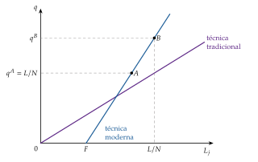
Fuente: elaboración propia a partir de Murphy, Shleifer y Vishny (1989) y Krugman (1995, cap. 2). Primer paso del gráfico 11.
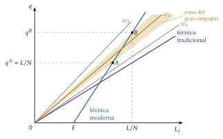
Fuente: elaboración propia a partir de Murphy, Shleifer y Vishny (1989) y Krugman (1995, cap. 2).
C. Anexo: la evaluación de impacto paso a paso
Por qué la aleatorización elimina el sesgo de selección
Paso 1: lo que se observa de cada persona es \(Y_i=D_i\,Y_i(1)+(1-D_i)\,Y_i(0)\): el resultado con el programa si lo recibe y sin él si no. Por tanto, la diferencia de medias observada entre tratados y no tratados es \[\mathbb{E}[Y_i\mid D_i=1]-\mathbb{E}[Y_i\mid D_i=0]=\mathbb{E}[Y_i(1)\mid D_i=1]-\mathbb{E}[Y_i(0)\mid D_i=0].\]
Paso 2: sumando y restando \(\mathbb{E}[Y_i(0)\mid D_i=1]\), lo que los tratados habrían obtenido sin el programa (que no se observa): \[\begin{aligned} \mathbb{E}[Y_i\mid D_i=1]-\mathbb{E}[Y_i\mid D_i=0] &=\mathbb{E}[Y_i(1)\mid D_i=1]-\mathbb{E}[Y_i(0)\mid D_i=1]\\ &\quad+\mathbb{E}[Y_i(0)\mid D_i=1]-\mathbb{E}[Y_i(0)\mid D_i=0]\\ &=\underbrace{\mathbb{E}[Y_i(1)-Y_i(0)\mid D_i=1]}_{\text{efecto en los tratados}}+\underbrace{\mathbb{E}[Y_i(0)\mid D_i=1]-\mathbb{E}[Y_i(0)\mid D_i=0]}_{\text{sesgo de selección}}, \end{aligned}\] que es la descomposición (1).
Paso 3: si el programa se asigna al azar, \(D_i\) es independiente de los resultados potenciales, de modo que \(\mathbb{E}[Y_i(0)\mid D_i=1]=\mathbb{E}[Y_i(0)\mid D_i=0]=\mathbb{E}[Y_i(0)]\), y lo mismo con \(Y_i(1)\). El sesgo de selección es cero y el efecto en los tratados coincide con el efecto medio: \[\mathbb{E}[Y_i\mid D_i=1]-\mathbb{E}[Y_i\mid D_i=0]=\mathbb{E}[Y_i(1)-Y_i(0)]=\mathrm{ATE}.\]
Paso 4: se estima con la diferencia de las medias muestrales o, lo que es lo mismo, con la regresión por mínimos cuadrados \(Y_i=b_0+b_1D_i+u_i\), donde \(b_1\) estima el ATE (\(b_0\), \(b_1\) y \(u_i\) son letras locales). Añadir variables de control no cambia lo que se estima, pero lo hace más preciso. ∎
Lo que la demostración no dice: la igualdad vale para la población de la que se sacó la muestra; de otras poblaciones no dice nada (la validez externa, apartado III.3.1).
Cuando no todos cumplen: la intención de tratar
Si se sortea la oferta del programa pero no todos los elegidos lo usan (ni todos los demás se quedan sin él), comparar a los asignados con los no asignados da el efecto de la intención de tratar, que sigue sin sesgo pero mezcla el efecto con la participación. Dividiéndolo por la diferencia en la proporción de tratados entre los 2 grupos se obtiene el efecto en quienes participan porque se les ofrece, usando el sorteo como variable instrumental.
Cuando no se puede sortear: los cuasiexperimentos
Diferencias en diferencias: se compara el cambio en el tiempo de los tratados con el de los no tratados, suponiendo que sin el programa habrían evolucionado en paralelo. Duflo (2001) lo aplica a la construcción de más de 61.000 escuelas en Indonesia en los 70, comparando las regiones con más y menos escuelas y a los niños que tenían edad de aprovecharlas con los mayores.
Regresión discontinua: si el programa se da a quien está por debajo de un umbral (de renta, de nota), se compara a los que quedan justo a un lado y al otro, que son casi iguales.
Variables instrumentales: una variable que afecta a quién recibe el programa pero no al resultado por otra vía (como la mortalidad de los colonos en el apartado II.3.2).
Experimentos naturales: un hecho ajeno a las personas (una lotería, una frontera, una reforma) que reparte el tratamiento casi al azar.
Su estudio detallado, con sus supuestos y la evaluación de las políticas públicas en España, se hace aparte [ver tema 4.B.6].
D. Anexo: experimentos de desarrollo por áreas
| Área | Programa y lugar | Resultado | Fuente |
|---|---|---|---|
| Salud | Desparasitación en las escuelas (Busia, Kenia) | Una cuarta parte menos de absentismo, también en los colegios vecinos; más consumo y salario 20 años después | Miguel y Kremer (2004), Hamory et al. (2021) |
| Pago pequeño por los antiparasitarios (Kenia) | La participación cae en torno a un 80 % | Kremer y Miguel (2007) | |
| Mosquiteras gratis o a precio reducido (Kenia) | Cobrar reduce mucho la demanda y no mejora el uso | Cohen y Dupas (2010) | |
| Campamentos de vacunación y lentejas (Udaipur, India) | Inmunización completa: 6 %, 18 % y 39 %, a mitad de coste | Banerjee et al. (2010) | |
| Educación | Libros de texto y láminas (Kenia) | Sin efecto medio; los libros solo ayudan a los mejores | Glewwe, Kremer y Moulin (2009), Glewwe et al. (2004) |
| Comidas en los preescolares (Kenia) | +31 % de asistencia; mejores pruebas solo con maestros con experiencia | Vermeersch y Kremer (2005) | |
| Refuerzo según el nivel (Pratham, India) | Fuerte mejora del aprendizaje de los rezagados; llevado a escala | Banerjee et al. (2007), Banerjee et al. (2017) | |
| Maestros contratados y grupos por nivel (Kenia) | Más aprendizaje que reducir alumnos por profesor fijo | Duflo, Dupas y Kremer (2011, 2015) | |
| Cámaras y pago según la asistencia (India) | El absentismo de los maestros se reduce a la mitad | Duflo, Hanna y Ryan (2012) | |
| Crédito | Microcréditos (6 países) | Efectos modestos y poca demanda | Banerjee, Karlan y Zinman (2015) |
| Sin responsabilidad conjunta (Filipinas) | No aumentan los impagos | Giné y Karlan (2014) | |
| Agricultura | Fertilizante con descuento tras la cosecha (Kenia) | Tanto uso como con subvenciones mucho mayores: sesgo al presente | Duflo, Kremer y Robinson (2011) |
| Transferencias | Progresa (México) | Más escolarización y mejor salud infantil | T. P. Schultz (2004) |
| GiveDirectly (Kenia) | Más consumo, activos y bienestar; multiplicador local de unos 2,5 | Haushofer y Shapiro (2016), Egger et al. (2022) | |
| Programas de graduación (6 países; BRAC en Bangladés) | Efectos duraderos; umbral de activos | Banerjee et al. (2015), Balboni et al. (2022) |
Fuente: elaboración propia a partir de los artículos citados.
E. Anexo: preguntas de test
Preguntas tipo test del primer ejercicio: simulador de test.
Bibliografía
Los motivos oficiales: Gunnar Myrdal recibió el Premio Nobel de Economía en 1974, con Friedrich Hayek, «por su trabajo pionero en la teoría del dinero y de las fluctuaciones económicas y por su penetrante análisis de la interdependencia de los fenómenos económicos, sociales e institucionales»; Arthur Lewis y Theodore Schultz, en 1979, «por su investigación pionera sobre el desarrollo económico, con especial atención a los problemas de los países en desarrollo»; Douglass North, en 1993, con Robert Fogel, «por haber renovado la investigación en historia económica aplicando la teoría económica y métodos cuantitativos para explicar el cambio económico e institucional»; Amartya Sen, en 1998, «por sus contribuciones a la economía del bienestar»; Angus Deaton, en 2015, «por su análisis del consumo, la pobreza y el bienestar»; Abhijit Banerjee, Esther Duflo y Michael Kremer, en 2019, «por su enfoque experimental para aliviar la pobreza global», y Daron Acemoglu, Simon Johnson y James Robinson, en 2024, «por sus estudios sobre cómo se forman las instituciones y cómo afectan a la prosperidad».↩︎
Robert Solow recibió el Premio Nobel de Economía en 1987 «por sus contribuciones a la teoría del crecimiento económico».↩︎
La ley de Engel dice que, al subir la renta, la parte que se gasta en alimentos baja, aunque el gasto en alimentos aumente: su elasticidad renta es menor que 1. Por eso la demanda mundial de productos agrarios crece menos que la renta mundial.↩︎
Simon Kuznets recibió el Premio Nobel de Economía en 1971 «por su interpretación, fundada empíricamente, del crecimiento económico, que ha llevado a una comprensión nueva y más profunda de la estructura económica y social y del proceso de desarrollo».↩︎
La separación entre la teoría del desarrollo y la del crecimiento no fue tan tajante: muchas de estas ideas (economías de escala, externalidades, equilibrios múltiples) las incorporó después, ya formalizadas, la teoría del crecimiento endógeno (apartado II.3.1), con implicaciones de política no muy distintas.↩︎
Un resumen del modelo, en «Modelo de Harris-Todaro» (Wikipedia).↩︎
\(L_U\) es una letra local de este párrafo. El modelo explica una paradoja de los países en desarrollo: se emigra a las ciudades aunque el paro urbano sea alto, porque lo que cuenta es el salario esperado y no el salario seguro.↩︎
El precedente es Young (1928): las economías de escala dinámicas, que crecen con el tamaño del mercado, como motor del crecimiento.↩︎
Una versión es la trampa demográfica de Nelson (1956): con rentas bajas, cada aumento de la renta eleva el crecimiento de la población más que el de la producción, y la renta por habitante vuelve a su nivel de subsistencia (el punto \(A\)); solo un salto que la lleve más allá del umbral \(U\), a partir del cual la producción crece más que la población, saca al país de la trampa. Para conseguirlo, más ahorro, menos crecimiento de la población o un gran empujón.
↩︎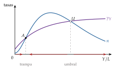
Un mapa del centro y la periferia del sistema mundial, en «La teoría del centro-periferia» (El Orden Mundial). El mismo enfoque aplicado a la Unión Europea, en Río Casasola (2018).↩︎
La ISI tenía también un pilar monetario: tras la Segunda Guerra Mundial los países pobres no tenían divisas para importar, y producir en casa lo que se importaba era una forma de racionarlas. Para ver. Hoy defiende la protección de la industria naciente Ha-Joon Chang, en «Why Are Some Countries Rich and Others Poor? | Economics for People with Ha-Joon Chang» (New Economic Thinking, YouTube).↩︎
A largo plazo, un país no puede crecer más deprisa de lo que permite su balanza de pagos: \(\gamma_Y=(\varepsilon_{X,Y^*}/\varepsilon_{M,Y})\,\gamma_{Y^*}\), donde \(\varepsilon_{X,Y^*}\) es la elasticidad de sus exportaciones a la renta mundial, \(\varepsilon_{M,Y}\) la de sus importaciones a su renta y \(\gamma_{Y^*}\) el crecimiento del resto del mundo. Si la periferia exporta bienes con poca elasticidad renta e importa bienes con mucha, crece menos que el centro.↩︎
Joseph Stiglitz recibió el Premio Nobel de Economía en 2001, con George Akerlof y Michael Spence, «por sus análisis de los mercados con información asimétrica».↩︎
Robert Lucas recibió el Premio Nobel de Economía en 1995 «por haber desarrollado y aplicado la hipótesis de las expectativas racionales, transformando así el análisis macroeconómico y profundizando en la comprensión de la política económica». Lucas calcula que, con la misma tecnología y sin diferencias de capital humano, el producto marginal del capital en la India sería decenas de veces el de Estados Unidos. Las diferencias de capital humano, de productividad, de instituciones y de riesgo explican por qué no es así [ver tema 3.B.29].↩︎
Robert E. Hall recibió el Premio Nobel de Economía en 2026, con Michael Woodford, «por los fundamentos microeconómicos de la estabilización macroeconómica».↩︎
Por la misma falta de seguridad jurídica, el Grupo Banco Mundial tiene un organismo, el Organismo Multilateral de Garantía de Inversiones (OMGI, MIGA en inglés), que asegura a los inversores extranjeros contra los riesgos políticos en los países en desarrollo [ver tema 3.B.30].↩︎
Joshua Angrist y Guido Imbens recibieron el Premio Nobel de Economía en 2021 «por sus contribuciones metodológicas al análisis de las relaciones causales», y David Card, el mismo año, «por sus contribuciones empíricas a la economía laboral», en buena parte con experimentos naturales. Con ellos, los cuasiexperimentos del anexo C pasaron a ser herramientas estándar, también en la economía del desarrollo.↩︎
El ahorro nacional bruto de China llegó al 51 % del PIB en 2008 y aún era del 42,9 % en 2024. China pasó de producir con mucho trabajo y poco capital a ser una potencia industrial, con un Estado que coordinó la inversión y amplió la capacidad productiva.↩︎